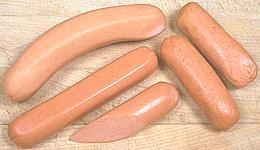
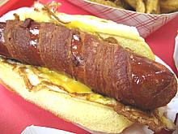
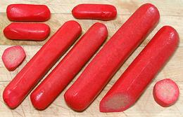
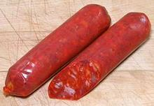
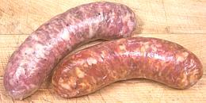
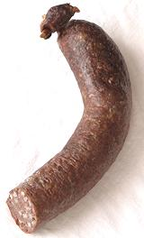
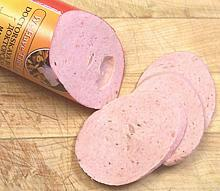
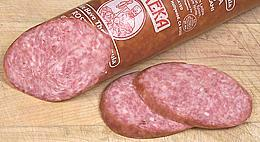
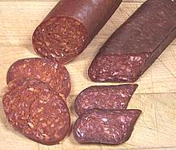
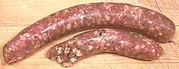

Africa
North
Central
South
America
North
Latin
Asia
China
Vietnam
Thailand
Philippines
Korea
Europe
Anatolia &
Caucasus
Baltics
Belarus
British Isles
Bulgaria
France
Germany
Hungary
Italy
Jewish
Poland
Portugal
Romaina
Russia
Spain
Sweden
Switzerland
Ukaraine
Levant &
Mid-East
Lebanon
Vegetarian
SAFARI
Users
General & History
Sausage or Salami?
Well, technically they're all sausages, but those called "salami" are generally drier, firmer, likely saltier, often larger, and can be sliced and eaten without cooking. Most salamis are raw and cured by air drying, salting and/or smoking, but some are cooked. Some called sausages are air dried, cured, salted, and/or smoked and eaten uncooked as well.
Some General Terms
Sausages come in three general categories, which have to be handled quite differently.
Fresh:
[Chorizo Fresco, etc.] These sausages are made up of raw ingredients and usually of a fairly loose texture. They must be kept well refrigerated and cooked within a few days, even fewer if they contain blood, before eating.Semi-cured:
These sausages are generally partially dried and may contain more salt (a preservative) than Fresh Sausages, but still must be refrigerated and cooked before eating. They will keep longer refrigerated than Fresh Sausages.Fully Dry Cured:
These sausages are relatively firm, dry and salty. Many can be stored at room temperature for short periods, but are better refrigerated. They are often just sliced and eaten as appetizers or the like, usually at room temperature, with no cooking required.Fully Cooked:
These are sausages that have been cooked as part of their production. This cooking may be done as part of a hot smoking process, or separately. These sausages can be eaten without cooking, but need to be kept refrigerated. They are less perishable than Fresh sausages, perhaps even a week or two, and sometimes three, depending. Some vacuum packed varieties will keep refrigerated much longer, until their vacuum seal is broken.
Religious Considerations
Jews and Muslims must avoid pork in any form (including sausage casings from pigs). Both also may not consume blood, so blood sausages are not on their menus. Fully observant Jews must buy their meat and sausages from a kosher butcher, and observant Muslims from a halal butcher, to assure the animals have been slaughtered and butchered in conformance with specified ritual and methods. Kosher meat must be salted (that's what kosher salt is for) to remove all traces of blood.
Casings
Traditionally sausages meats are stuffed into casings made from the intestines of pigs, sheep, cows and veal calves. Pig casings are most popular but for kosher and halal (Islamic) products manufacturers use sheep casings, though they are more difficult to use.
Today volume producers prefer an artificial casing made from collagen for product uniformity. Collagen is made by boiling down animal hides. Inedible casings are also used, particularly for larger size. Fiber casings have a look and feel more like natural casings than plastic casings do. "Skinless" products like hot dogs and many vegetarian sausages are made in a plastic casing which is stripped off after cooking and before packaging.
The photo shows natural pork casings obtained from a local Philippine market, about 5-1/2 feet long each and weighing about 0.6 ounce each. They are cleaned, heavily salted and must be refrigerated and used within a few days. About 1/4 inch wide as shown they will expand to about 1-1/2 inches diameter when filled.
While natural and collagen casings are easily purchased for making meat sausage at home, vegetarians will find there is no casing for them and will have to form their sausage into patties, loaves, roll them in some substance or other, or wrap them in plastic to be stripped off after preliminary cooking. High volume makers of vegetarian sausage can use a liquid coating system which produce an effect similar to a collagen casing.
Authenticity
I list mostly sausages easily and economically available in Southern California. Sausages are perishable and expensive to ship, so nearly all examples are "made in USA". The vast ethnic communities in this country, and particularly in Los Angeles, keep the sausage makers true (they usually "came from there" anyway). Most of the examples were obtained from markets serving those communities. As the U.S. overtakes the Old World quality of wine, cheese and caviar, our sausage makers are keeping pace.
Due to changes in U.S. laws, mostly to mollify the Europeans, American sausage makers can no longer make, say, a Hungarian Sausage (or any other country's sausage), no matter how authentically made, and call it a "Hungarian Sausage" - but our sausage makers are resourceful. Instead they call it "Hungarian Brand Sausage", which doesn't imply it actually came from Hungary.
Also included are a number of purely authentic American industrial products which make no pretense to traditional methods. The ingredient list generally starts with "Mechanically separated chicken", has soy protein in the middle and ends with "flavoring" and a long list of chemicals.
Mustard
Many sausages are grilled or fried and eaten with mustard. I have tried any number of mustards, fancy and plain. Many clash with or distract from the sausage. Economical mustards I've found excellent with sausages are French's Spicy Brown Mustard, Morehouse Deli Mustard and Gulden's Spicy Mustard.
Varieties
We have re-organized this page to place sausages in a country of origin context. If you want to find a sausage by name, use the search engine. Most of the sausages listed are made in North America, but accurately reflect those from the country of origin. Most of the sausage makers "came from there", and our huge ethnic populations keep them honest. We have made no attempt to track down exotic sausages - all listed here were conveniently available in Los Angeles, California.
America - North
This region, with a temperate climate, is home to a very wide range of ethnic cultures from all over the world. Nearly all the sausages on this page were made in North America, but here we list only ones that are unique to the continent or so far removed from their ethnic origin as to be "inauthentic".
Andouille- (Fully Cooked)Pronounced "ahn-DOO-wee", it's a pork sausage in the Cajun / Creole style of Louisiana, USA, and used for recipes from that area. It is said to be descended from the sausages of Normandy and Brittany France, which in turn may descend from similar German sausages. This is one of the few "hot" sausages that actually take that designation seriously. Commercial versions are smaller in diameter than traditionally made, the meat chopped finer, and not smoked nearly as long so are lighter in color. The photo specimens (commercial) were fully cooked, 5 inches long, 1.2 inches in diameter and weighed 3 ounces each. 200 calories / link, 75% from fat. They need to be kept refrigerated and should be used within just a few days from opening the vacuum package. Typically: pork, water, salt, spices, garlic, paprika, other flavorings, sodium erythorbate, sodium nitrite. Bologna- (Fully Cooked)Properly pronounced "baloney", this is an American imitation of the Italian Mortadella (also adopted by Russia under the name Doctorskaya Kielbasa). It's a very finely ground, fully cooked sausage sold in various sizes and shapes, and often in pre-sliced packages. Large sizes are used for making sandwiches and small sizes for frying for breakfast and similar uses. In northeastern Canada a fried or barbecued slab of bologna is called a "Newfie Steak". A similar sausage is made in Australia and variously called Polony, Fritz, Devon or Strasbourg. Link to NutritionData. As an imitation mortadella, bologna is properly made of pork and lard, but in the U.S. it is also made of chicken, turkey, beef and (may the gods save us) GMO soybeans. The photo specimens are:
Cooking: Bologna is commonly sliced fairly thin and used in sandwiches with no further cooking, but it is also often fried. When frying a cut is usually made from one side to the center or in "fireman's badge" form, because it otherwise tends to buckle badly. It exudes little oil, so it needs some oil in the pan for heat transfer. Bologna is also used as a wrap around mashed potatoes and baked, and in many other ways. Storing: Bologna should always be kept well refrigerated and should be used within 7 days of opening a vacuum package. Boudin Blanc- (Fresh) - [Louisiana; also Boudin Rouge]
I have placed Boudin Blanc here rather than under France because it
is made differently in Louisiana. In Cajun and Creole cooking the
word "boudin" always means Boudin Blank, unless otherwise specified.
In France it is made of pork, with heart and liver often included,
and milk. In Louisiana it is always made with pork and rice. The
equivalent to France's Boudin Noir (Blood Sausage) is Boudin Rouge,
which is Boudin Blanc with pig blood added.
Photo by Southern Foodways Alliance (cropped),
distributed under license Creative Commons
Attribution Share-Alike v2.0 Generic.
Braunschweiger- (Fully Cooked)
Despite its very German name, this soft spreadable pork and pork liver
(minimum 30% liver) sausage is an American sausage. It is very similar
to Liverwurst, but smoked and/or including cured
bacon for a deeper flavor. German Braunschweiger
is very different, though it is spreadable. The main use of this
sausage is as a sandwich spread. Braunschweiger is highly perishable,
should be kept well refrigerated and eaten in less than a week. The
photo specimen, made by Schreiners Fine Sausages,
was 3 inches diameter. Typically pork, pork liver, cured bacon, salt,
water, flavorings, sodium erythorbate, sodium nitrite.
Breakfast Links- (Fresh) The common American breakfast sausage served in diners and hotels. The
photo specimens are Farmer John brand produced by a major
Los Angeles pork factory. These fry up quickly because of their small
diameter, brown well and are tasty due to the high fat content. Quite a bit
of fat is rendered while frying. The specimens are 3-1/2 inches long by
0.66 inch diameter, weigh about 1 ounce each. 50 calories / link, 70% from
fat. These have a thin casing and are simply formed at the ends and cut
rather than twisted. There are versions without casings that are simply
extruded and cut to length but those don't fry as nicely. Typically: pork,
water, sodium lactate, salt, flavorings, sugar and collagen casings.
The common American breakfast sausage served in diners and hotels. The
photo specimens are Farmer John brand produced by a major
Los Angeles pork factory. These fry up quickly because of their small
diameter, brown well and are tasty due to the high fat content. Quite a bit
of fat is rendered while frying. The specimens are 3-1/2 inches long by
0.66 inch diameter, weigh about 1 ounce each. 50 calories / link, 70% from
fat. These have a thin casing and are simply formed at the ends and cut
rather than twisted. There are versions without casings that are simply
extruded and cut to length but those don't fry as nicely. Typically: pork,
water, sodium lactate, salt, flavorings, sugar and collagen casings.
Chub Sausage- (Fresh) - [Chub Sausage, Country Pork Sausage]This is a form of sausage packaging used primarily for soft sausage that will be crumbled, spread or formed into patties, but firmer sausages can also be described as "chubs". A Chub is generally short and thick with common sizes of 12 oz, 1 pound and 2 pound. The casing is generally non-edible plastic or fiber sealed with metal rings at the ends - a packaging highly suited to volume production. It is usually a simple pork "breakfast" sausage. A version flavored with sage is often used in turkey stuffings and similar applications. The photo specimen, by Jimmy Dean was a 2-1/2
inch diameter 1 pound chub. Pork, water, salt, spices, sugar, corn
syrup, monosodium glutamate. Calories are figured on a 2 ounce
cooked sample which would have been 2.6 ounces raw and
disregards fat left in the pan - 220 calories, 86% from fat.
Danger Dog- (Fresh - or Street Vendor cooked) - [Tijuana Bacon Dog]
Danger Dogs get their name from the street vendors of Tijuana, not
always the most mindful of bacteria. It has become quite popular in
Southern California and other Southwest states where you can buy them
from street vendors at practically any event that draws a crowd. You
can also buy them (in relative safety) in supermarkets and fry them
up yourself. Danger dogs are served in a bun with grilled onions and
chili sauce or topped with mayonnaise. Danger Dogs have also surfaced
as the Jersey Breakfast Dog, far more dangerous
than the original.
Hot Dogs- (Fresh) - [Franks, Wieners, Weenies, Frankfurters] The most popular sausage in North America, it is the American version of the German Wiener. The origin of the name "hot dog" is highly controversial but seems to have appeared in the late 1800s. The hot dog very much resembles Bologna in texture and flavor, but tends to be a bit more distinctly seasoned and may be lightly smoked. Today it is usually made "skinless", cooked in a plastic casing which is peeled off before packaging, but a few are still made with natural casings. These are made primarily of pork but may also contain beef, chicken, turkey or any mix of those. All beef versions are made for the kosher market and "more healthful" Turkey and chicken versions are also made, as well as Vegetarian versions, generally from TVP (Textured Vegetable Protein) and various other chemically processed ingredients. In the photo, the specimens in the front are typical American hot dogs (the others are European style Wieners). The American, by Farmer John were skinless, 4.8 inches long, 7/8 inch diameter and 1-1/2 ounces each - 140 calories - 86% from fat. Claiming "No Fillers, No Byproducts", they were made from: pork, mechanically separated turkey, water, salt, corn syrup, natural flavorings, dextrose, sugar, potassium lactate, sodium phosphates, beef, sodium erythorbate, oleoresin, paprika, sodium nitrite. Compared to the European style, the Farmer John are quite salty
and had a stronger, coarsest flavor. They were easier to fry or roast
because they're very straight and skinless, but they end up a bit dry.
The European are much plumper, lighter and juicier with casing helping
to keep them moist. Simmered, the coarseness of the Farmer John flavor
was more noticeable, but, unlike the European, they don't tend to split
open.
Jersey Breakfast Dog- (Street Vendor cooked)
This is a New Jersey adaptation of the Danger Dog.
Following the hot dog tradition of New Jersey, they are deep fried
rather than grilled or pan fried. Breakfast Dogs are served on a bun
with a fried egg and melted cheese under them, which looks far more
deadly than the original Danger Dog. This formula is derived from the
Jersey Breakfast Sandwich, made from
Jersey Pork Roll rather than hot dogs. Other
New Jersey forms of deep fried hot dogs (without bacon) are "in and
outers" (fried until lightly blistered) and "rippers" (fried until
they split wide open). Photo copyright Jason Perlow, all
rights released.
Jersey Pork Roll- (Semi Cured) - [Taylor Ham (obsolete, not a US approved name)]This "King of Mystery Meats" is made from secret recipes by several companies in or around Trenton, New Jersey. Maker John Taylor has become sufficiently dominant to make "Taylor Ham" a common (though now illegal) alternative name to Jersey Pork Roll, but some connoisseurs prefer products from smaller makers. The recipes may be secret, but one thing is for sure, salt. Enough
salt so I think the product is eternal - even mold doesn't grow on it.
Several sellers ship pork roll to most points in the U.S. packed in
styrofoam with frozen gel packs. The photo specimen (4 inch diameter,
4 pounds) was shipped to me UPS 3rd day ground courtesy Mike Vitale
(Yendor). The most famous use for Pork Roll is the
Jersey Breakfast Sandwich.
For details see Details and Cooking.
Kielbasa - U.S.(Fully Cooked) - [Polish Sausage, Keilbasa]A cooked and generally lightly smoked sausage sort of resembling one made in Poland. Generally about 18 inches long and bent into a "U" shape but other sizes are also made. The closest Polish equivalent is Wiejska, which translates roughly to "country one", which is made of pork and veal and generally sold in the familiar "U" shape. In Poland they would be made from better cuts of pork and veal,
and they are made that way here by specialty sausage makers, but the
big meat packers may use pork, beef, chicken, turkey or whatever they
have a lot of offcuts from or need to use up.
Link to
NutritionData.
Lebanon Bologna- (Fully Cooked)
Named for the Lebanon Valley of Pennsylvania where it was developed by
German immigrants, this salami went into commercial production in 1885.
A truly American salami with a distinct and memorable flavor, it is
still made primarily in the Lebanon Valley. Three major manufacturers
using traditional methods, are Weavers,
Seltzer's and Kutztown. Made
from beef and salt, Lebanon bologna is fermented and aged for at least
10 days, some of that time overlapping a slow smoking process. The
photo specimen, by Seltzer's, is the standard 4-1/4 inch diameter
American sliced sandwich meat format, though other sizes are made.
Beef, salt, sugar, dextrose, spices, lactic acid starter culture,
sodium erythorbate, sodium nitrite. 40 calories per slice, 50% from
fat.
Olive Loaf- (Fully Cooked)
This is just regular commercial Bologna with
green Spanish olives and red bell pepper embedded in it. The photo
sample, Albertson's house brand, is in the standard 4-1/4 inch
American sliced sandwich meat format. Mechanically separated chicken,
water, corn syrup, pork, beef, modified food starch, hydrolized soy
protein, olives, red bell peppers (pickled), salt, flavoring, dextrose,
potassium lactate, sodium lactate, sodium phosphates, sodium diacetate,
sodium erythorbate, sodium nitrite. 80 calories per slice, 63% from
fat.
Penn Sausage- (Fresh)As far as I've found, Bar M Packers of Los Angeles is the only maker of "Penn Sausage" and they make two varieties, "mild" and "hot". The mild still has a bit of hotness to it and the hot is much hotter. 4-1/4 inches long, 1 inch diameter, 2-1/4 ounces each. Pork, beef hearts, water, salt, corn syrup, flavorings, dextrose, sodium phosphate, paprika, garlic, sodium erythorbate, sodium nitrite. 85 calories / ounce 76% from fat. Keep refrigerated and use within a few days of breaking the vacuum seal. Pepperoni- (Fully Cured)A hard. spicy, fermented American salami more or less in the style of southern Italy (in Italy "pepperoni" is a bell pepper). While it can be eaten raw, this imitation of the Italian salsiccia Napoletana piccante is the most popular topping for American style pizzas and is used in other recipes. The photo specimens, Margherita brand (ConAgra Foods, Downers Grove, Illinois), were 10 inches long, 1-3/8 inches in diameter and weighed about 6-3/4 ounces each. Typically: pork, beef, salt, dextrose, flavoring, lactic acid starter culture, paprika sodium nitrite, spices, BHA, BHT, citric acid. 140 calories per ounce, 86% from fat. Keep dry and refrigerated. Summer Sausage- (Fully Cooked) - [Cervelat, Thuringer (USA); Blockwurst, Plockwurst (Germany)]
Basically an American cervelat, a family of mildly seasoned semi-soft
salamis, fermented, generally smoked and fully cooked. Commercially
they are made from pork or pork and beef or beef, but are a favorite
with home sausage makers who often make them with game meats. This
"ready to eat" sausage is fairly durable but should be kept
refrigerated and eaten within 7 days or so of breaking the vacuum
pack. The photo sample, by Hilshire Farm, was
13-1/2 inches long, 2-1/4 inches diameter and weighed 2 pounds but
they also make one 14 inches long, 2-3/4 inches diameter and 3 pounds.
Beef and Pork, salt, natural spices, dextrose lactic acid starter
culture, flavorings, sodium ascorbate (vitamin C), Sodium Nitrite; 95
calories per ounce, 79% from fat. This sausage is sometimes called
"Thuringer" but is very different from real German
Thuringer.
Winter Salami- (Canada - Smoked and Fully Dry Cured)
This salami is patterned on the recipe for an old European salami made
in the autumn at hog slaughtering time, serving as winter provisions.
It is finely ground and very distinctively spiced.
Black Kassel brand. 7-1/2 inches long, 1-1/2 inch diameter and
weighing 8-1/2 ounces, it was packed in a very fancy flexible wood
roll gift package. Purchased from a large multi-ethnic market in Los
Angeles (Sunland) for 2019 US $7.51 / pound - probably a close-out
item from some distributor, Pork, spices, spice extracts, potassium
chloride, corn syrup solids, dextrose, dried glucose syrup, garlic,
flavor, sodium ascorbate, sugar, lactic acid starter culture, natural
smoke flavor, sodium nitrite, sodium nitrate, smoke.
Vienna Sausage- (Fully Cooked)In the USA "Vienna Sausage" means these lamentable things. Somewhat smaller than a cocktail wiener they are fully cooked and almost always packed in cans. Nearly devoid of flavor they are mushy straight from the can, but not nearly as mushy as they'll be if you fry them. The only excuse for their existence is the long shelf life of cans. They are a pantry stapel in Puerto Rico. The "Major Brand Name" samples in the photo were 2-1/4 inch long, 3/4 inch in diameter and weighed just over 1/2 ounce each. Mechanically separated chicken, chicken broth, water, beef, pork, salt, sugar, spices, sodium erythorbate, flavorings, sodium nitrite, garlic powder - 43 calories per link, 85% from fat. |
Americas - Latin
While Mexico is technically part of North America, in culinary matters it is much closer to Central and South America, so we include it here. These regions have been under intense Spanish and Portuguese influence - which is not to say their sausages bear much resemblance to Spanish and Portuguese sausages of the same names.
Chicharrón Prensado- (Fully Cooked)This is a kind of Mexican Head Cheese. Ingred: Pork Fat, Pork
Trimmings, Pork Skin, preservatives (BHT, BHA). Product of
Mexico, fully cooked deep fried pork. Purchased from a large
multi-ethnic market in Los Angeles (Altadena) for 2019 US $5.49 /
pound.
Chorizo de Puerco, Mexican- (Fresh)This ia a version of Chorizo Fresco, but is not at all interchangeable with any form of "Chorizo" from Spain, Portugal, Central America, South America, the Caribbean, or the Philippines, regardless of the name. It is heavily spiced with chilis rather than lightly spiced with paprika. Commercial brands tend to be a dumping ground for parts of the pig that can't be unloaded any other way. I've seen commercial brands where the top two ingredients are "pork salivary glands, lymph nodes". The photo specimen was "store made" by Vallarta Supermarket, a specialist in Mexican, Central American and South American foods, so you can be pretty sure it's "authentic". Ingred: Pork, California chilis, vinegar, cloves, pepper, ginger, cumin, garlic, salt. Note the absence of salivary glands or lymph nodes. Buy: Purchase only "store made" from a market that
serves a Latino community. All the packaged products I've examined
are totally inferior. This sausage is removed from its casing, then
crumbled as it cooks. It should fry up crumbly with very little
exuded fat - not disintegrating into mush swimming in a pool
of bright orange fat as some of the commercial versions do. It is
quite red in color but only moderately hot. Unfortunately, the pork
flavor is difficult to detect under the chili and spices. It is
perishable; keep refrigerated and use in less than a week.
Chorizo Argentino | Chorizo Uruguayano- (Fresh)This Chorizo is usually made of pork, but beef may be included, and there are all beef versions. It is usually flavored with wine or vinegar, paprika and/or chili, oregano or other herbs and sometimes nutmeg. The Uruguayan may vary slightly in seasoning, but so does the Argentine - consider them interchangeable. For a long thin version see Salchicha Parrillera. The photo specimens were not very sliceable raw, but firmed up
with wet cooking and could then be easily sliced. They were 5.2 inch
long, 1.3 inch diameter and weighted 4-1/4 ounces, "store made" by
Vallarta Supermarket. Ingred: Pork, California
Chili, vinegar, cloves, pepper, ginger, cumin, garlic, salt.
Subst: fresh Bratwurst should work fine .
Chorizo, Colombiano- (Semi-cured, sometimes smoked)This is a semi-cured pork sausage It may be flavored with herbs, paprika and/or chili. The photo specimens were made by Corte's Provisions, 1.2 inches diameter and 3.9 inches long, but length may vary widely with maker. Ingred: Pork, pork fat, water, vinegar, salt, paprika, onion, scallion, garlic, sodium citrate, sodium diacetate, cayenne pepper, sodium phosphate, sodium nitrite, black pepper, cumin, cloves, yellow #6. This an important sausage in Colombia and often home made, with
a cure consisting of hanging up and air drying for 3 to 4 days.
These should be kept refrigerated and used within a week. Subst:
another semi-cured chorizo such as Chorizo Balbao.
Chorizo, Ecuatoriano- (Semi-cured, sometimes smoked) This is a semi-cured pork sausage It may be flavored with herbs,
paprika and/or chili. The photo specimens were made by
Corte's Provisions, 1.3 inches diameter and 3.7
inches long, but length may vary widely with maker. Ingred: Pork,
pork fat, water, vinegar, salt, onion, paprika, garlic,
sodium diacetate, sodium phosphate, sodium citrate,sodium nitrite,
oregano, black pepper, cayenne pepper, cumin, cloves.
Subst: another semi-cured chorizo such as Chorizo Balbao.
Chorizo, Salvadoran Paisano- (Fresh)This Salvadoran peasant style chorizo is currently quite popular here in Southern California. Strips of corn husk tie off the links, which have more internal integrity than the Mexican chorizo, and it firms up a bit with wet cooking. It can be sliced before frying if desired, but can still be crumbled easily. It doesn't bleed as much of that awful red color as the Mexican, but has a similar chili bite from less of a hotter chili. It releases a moderate amount of fat when fried, and in my opinion, has much better flavor than Mexican Chorizo. The photo specimins were store brand, made in bulk by a sausage
factory in Los Angeles. Thery were typically 3-1/4 inches long, 1-1/2
inches diameter and weighed 3 ounces each. They were purchased from
a large multi-ethnic market in Los Angeles (Altadena) for 2017 US
$3.49 / pound. These should be kept refrigerated and used in less
than a week.
Chorizo Peruano- (semi-cured - sometimes smoked)
Sorry, these are not made from Llama meat.The photo specimens were
4.1 inches long, 1.2 inches diameter and weighed 2-3/4 ounces each,
made by Corte's Provisions.
Ingred: Pork, pork fat, water, vinegar, salt, paprika, onion, garlic
sodium citrate, sodium diacetate, sodium nitrite, sodium phosphate,
black pepper, cayenne pepper, ground cloves, ground cumin.
Chorizo Verdi- (fresh)This chorizo originated from Toluca, a major chorizo making region about 38 miles southwest of Mexico City. Made in the region, it is a dull green, but outside the region it is often dyed a brilliant green. Recipes vary by sausage maker. Some are much more complex, and may contain several greens besides cilantro. It is interesting to note that the maker of the photo specimen now makes a more authentic sausage than they did a year and a half ago. Then it was a brilliant blue-green and ground very fine. Although they haven't changed the ingredient list, they now make them with fresh Jalapenos rather than powder, grind them much more coarse, and there is very little evidence of dyes. These can be wet cooked in the casing, but when the casing is cut they will burst apart. The photo specimens were typically 3.4 inches long, 1.3 inches
diameter and weighed 2 ounces each. "Store made" by
Vallarta Supermarkets, 2019 US $4.59 / pound. Ingred: Pork, beef
trimming, salt, spices, cilantro, jalapeno powder, dextrose,
monosodium glutamate, sugar, hydrolized soy protein, yellow lake #5,
blue lake #1, essential oil, calcium silicate, red wine, water, salt.
Linguiça Calabresa- (fully cured)This sausage was developed in Brazil by Italian immigrants from
Calabria, Italy, originally using Calabrian pepper, but now made with
Brazilian pepper. It can be, and often is, served cold, but also
used in cooking. The photo specimens were 3.8 inches long, 1.25
inches diameter and weighed 2-5/8 ounces each, made by
Corte's Provisions.
Ingred: Pork, salt, sodium citrate, sodium diacetate, white wine,
fresh garlic, soy protein, brown sugar, sodium phosphate, sodium
nitrite, black pepper, crushed red pepper, sodium erythorbate,
monosodium glutamate, smoked flavor.
Longaniza, Mexican- (Fresh)Similar to Mexican Chorizo, this sausage is NOT interchangeable with sausages called "longaniza" from any other region. This sausage is a little firmer than Mexican chorizo. It can be sliced, preferably partially frozen, but will not firm up much with wet cooking and will look ragged. It may crumble a bit when fried. It releases a fair amount of fat with a strong red-orange color, but not so much as Mexican Chorizo, and it's a bit spicier. The photo specimens were a store brand, made in bulk by a
sausage factory in Los Angeles. These were 7-3/4 inches long, 1-1/8
inches diameter and weighed about 4-7/8 ounces each.
Typical ingred: Pork, California chili, vinegar, cloves, pepper,
ginger, cumin, garlic, salt. 12% fat. Preferably buy locally made
store brands - the big meat packers use the cheapest possible
ingredients, often including Salivary Glands and Lymph Nodes
(always check their labels). The photo specimens were purchased from
a large multi-ethnic market in Los Angeles (Altadena) for 2017 US
$2.79 / pound. These should be kept refrigerated and used in less
than a week.
Moronga- (Cooked) - [Rellena de Puerco, Morcilla, Blood Sausage]This is the blood sausage of Mexico, Central America and the Caribbean. It is stuffed into pork bung (large intestine) and boiled before being sold. Its most common use is chopped up and fried with Onions, Mint (or Epazote), and Jalapeno peppers, then used as a filling for tacos or similar. For this reason, the market I buy it from kits it with mint and jalapenos. In the Yucatán region it is often called by its Spanish name, Morcilla, and served with other sausages, pickled onion, cilantro and spices. For the most famous use, see our recipe Moronga Sausage Tacos The photo specimens, from a large market specializing in Mexican,
Central American and South American foods, were up to 2-3/4 inches
diameter. Ingr: boneless pork shoulder, pork bung, pork blood,
carrots, onions, jalapeno peppers, rice, salt, spices, sodium
citrate, sodium diacetate, garlic. 2017 US $5.09 / pound.
Salchicha Parrillera- (Fresh)In Argentina "Salchicha" means "sausage" and Parrilla is a grill.
This sausage is made exactly the same as Argentine Chorizo, but is
made in long thin lengths rather than plump links. You can keep it in
shape on the grill by running a couple skewers through from side to
side. The photo specimen, by Special America's,
was 3/4 inches diameter, weighed 8 ounces and was made in sheep
casing. Pork, water, curing salt (salt, sugar, dextrose, sodium
nitrite), flavoring, spices, sodium erythorbate - 90 calories per
ounce, 78% from fat.
|
Asia - China
China has a long history of making sausages, pretty much always from pork and in the same narrow format.
Chinese Sausages- (Fully Cured) - [lap cheong (China)]Chinese sausages are thin, wrinkled, rather dry, rather sweet pork sausages traditionally packaged in pairs. They are usually used as an ingredient in recipes. The FDA requires packages to be marked "to be cooked before serving". I doubt this message is universally obeyed. I know I've eaten plenty of them uncooked, but only ones made in USA. The flavor is unique and there is no ready substitute.
These sausages are manufactured by the millions in the West Coast
states to supply the huge Asian communities here, so few, if any, are
imported. Asians around here don't much trust foods made in China -
they like their sausages unleaded. The photo specimens, made in
Seattle, Washington, were 6 inches long by 0.8 inches in diameter and
weighed 1.6 ounces each. 240 calories per link, 79% from fat. They are
generally sold in vacuum packages and will keep, refrigerated, a long
time that way, but once opened should be used in a week or so.
Typically: pork, pork fat, sugar, soy sauce, salt, grain alcohol,
sodium nitrite, sodium erythorbate.
|
Asia - Korea
Soondae - Blood Sausage- (Fully Cooked) - [Soondae, Sundae (Korea)]The name Soondae, or Sundae, covers a class of blood sausages made in natural casings and usually containing sweet potato starch or similar noodles and sweet rice. In Korea there are many varieties, as many as there are regions and then some, but here in Los Angeles the selection is much more limited. The manufacturer of the photo specimens recommends heating them still in their unopened shrink wrapped plastic bags by submerging in just boiled water for 5 minutes or so. They can also be steamed. They have a mild meaty flavor and a somewhat gelatinous texture from the noodles. The photo specimens were purchased from a Korean market in Los
Angeles for 2015 US $8.99 for 1.5 pounds (5.99 / pound). They were
9 inches long and 1-3/8 inch diameter weighing 6 ounces each, and
made in Los Angeles. Ingred: vermicelli (sweet potato starch noodles),
sweet rice, beef blood, pork shouts, lard, pork, potato starch,
modified corn starch, salt, MSG, sodium lactate, potassium phosphate,
black pepper, ginger, garlic, hog casings. For sausages they are very
low fat, only 3%.
Fish Sausage- (Fully Cooked) - [SoSeJi, Jinju Ham Sausage (Korea)]Sausage was introduced to Japan by Americans after the war, and became quite popular. The most available material for making them was fish. Today, ham predominates, but fish sausages like this one are still popular. It is most often sliced into disks, floured on both sides, diped into egg and fried on both sides. It is also cut into small pieces and stir fried with garlic and onions, then seasoned with soy sauce. The photo specimen, by Jinju Ham was 10 inches long, 1-1/2 inches
diameter, and weighed 10.6 ounces. It was purchased from a Korean Market
in Los Angeles (La Cañada) for 2021 US $2.99. Ingred: Fish Paste
(Pollaack), Corn Starch, Carrot, Corn, Pea, Green Bean, Soybean Oil, Salt,
Sugar, Ginger Powder, Onion Oil, Carrageenan, Conjak Powder, Oleoresin
Paprka, Cochineal Extract.
|
Asia - Vietnam
Sausage Rolls A part of French Indochina for about 150 years, Vietnam adopted a
few items from French culinary culture, interpreting them in a uniquely
Vietnamese way. One of these is Charcuterie, including the making of
sausages. Some of these sausages are very important to the making of
Vietnam's famous Banh Mi
Sandwiches, so for easy linking we have given them their own
Vietnamese Sausages page.
A part of French Indochina for about 150 years, Vietnam adopted a
few items from French culinary culture, interpreting them in a uniquely
Vietnamese way. One of these is Charcuterie, including the making of
sausages. Some of these sausages are very important to the making of
Vietnam's famous Banh Mi
Sandwiches, so for easy linking we have given them their own
Vietnamese Sausages page.
|
Asia - Thailand
E-SarnThis is a sour cured pork sausage with rice, originating in the northeast of Thailand (Issan), but now popular in Bancock and other cities. The photo specimens were 1.1 inches diameter and 4-3/4 inches long, weighing 2.9 ounces each, but I have seen photos of them from Thailand being much shorter, more like 2 inches. Glass noodles are also sometimes included there. These sausages have excellent flavor and are usually grilled. They are firm with some chewy spots inside. The photo specimens were made in
California by Champ Meatball Company. Ingred:
Pork, water, long grain rice (enriched with Iron (ferric orthophosphate),
niacin, thiamin mononitrate, folic acid), nam powder seasoning mix
(acidity regulator (glucono delta lactone, calcium lactate), dextrose,
salt, emulsifiers (sodium tripolyphosphate, potassium polymetaphosphate)
monosodium glutamate, antioxidant (sodium erythorbate), preservative
(sodium nitrite), spices (galingal, ginger)), glucono delta lactone
(souring agent), garlic, salt, pepper, monosodium glutamate, sodium
phosphate, sodium nitrite, sodium erythorbate, edible collagen casing.
|
Asia - Philippines
Filipinos are very fond of sausages, and any Philippine market here in Southern California is very well stocked with freshly made varieties. While I'm sure the Filipinos use some Chinese sausages, most of their sausages are of Spanish decent, but interpreted in an entirely Philippine way. In particular, the name Longanisa is used for sausages that would be called Chorizo Fresco in Spain.
Chorizo de Bilbao- (Semi Cured) - [(Spain - Basque)]This cooking chorizo is very popular in the Philippines, and all the Philippine markets have it in the freezer cases. It differs somewhat from the Basque original, being ground finer and doesn't use Spanish paprika. All the brands in the markets here in Los Angeles are made in USA, but given our huge Philippine community, they are probably pretty close to how they are made in the Philippines. This sausage is mildly spicy and works well in soups and stews,
holding its shape well in wet cooking. When fried, it exudes a lot
of fat, so you'll probably need to pour some off if, say, making
sausage & eggs. The photo specimens were distributed by Martin
Pure Foods of Walnut, CA. They were 4-1/2 inches long, 1-1/4 inches
in diameter and weighed 2.5 ounces. Ingrd: Pork, beef, salt, paprika,
dextrose, flavorings, monosodium glutamate, lactic acid starter
culture, citric acid, sodium erythorbate, sodium nitrite.
Hotdogs, Philippine- (Fully Cooked) - [Hotsilog (Tagalog)] In the Philippines, hotdogs are usually bright red, and spelled without a space. Street vendors always serve them with Banana Ketchup, making them unacceptably sweet to most non-Filipinos. Some recommend demanding mustard instead, even though the vendor will look at you like you're some sort of idiot. Some vendors string the jumbo sized ones on a bamboo skewer and cut them in a spiral, stretching them out a little so they cook evenly. A marshmallow is often added to one end, or both ends, of the skewer. They are a major ingredient in the very popular Philippine Spaghetti, also served with an unacceptably sweet sauce made from ground pork and beef, tomato sauce, banana ketchup and coarsely chopped red hotdogs. The photo specimens were from a large Philippine market in
Los Angeles (Eagle Rock). They had a distinct note of nutmeg in the
flavor. The red color is traditionally from annato, but most makers
now use red food coloring. These are skinless and fry brown very
quickly. The photo specimens were "Jumbo" size, 1 inch diameter and
6 inches long, weighing 2.6 ounces each; regular size, 3/4 inch
diameter and 4-1/2 inches long, weighing 1.2 ounces each; "Cocktail"
size, 5/8 inch diameter, 2 inches long, weighing 0.36 ounce each.
The two larger sizes were 2014 US $3.99 / pound and the Cocktail
size at $4.99 / pound. Beef, pork, water, modified food starch,
dextrose, soy sauce powder, sodium erythorbate, paprika oleoresin,
sodium nitrite, FD&C Red #40.
Longanisa, Philippine- (Fresh)
"Longaniza" in the Philippines is not similar to Longaniza in
Spain or Portugal - it would be called Chorizo Fresco in other
Spanish speaking regions of the world. It is generally made up into
short links about 1-1/4 inch in diameter and about 2 ounces each The
photo samples were obtained from Philippine markets in Los Angeles,
one labeled "Native" (natural) and the other labeled "Hot". This
sausage is usually stripped of its casing and crumbled for use.
Longanisa Hamonado- (Semi Cured)
"Ham cured" longaniza is a rather uniquely flavored sweet, smoked
pork sausage made in the Philippines. In Southern California,
Philippine markets also sell Chicken Hamonado sausages but I don't
know if they make those in the Philippines. This sausage is cooked
whole or sliced rather than crumbled. It exudes rather little fat and
stays quite firm with wet cooking, so can be used in soups and stews.
The photo specimen links were 4-1/2 inches long and weigh 2.1 ounces
each, purchased from a Philippine market in Los Angeles (Eagle Rock),
2014 US $3.49 / pound.
Longanisa Ilocano- (Fresh)
This famous sausage is made in the northern region of the Philippines,
from pork or pork and beef, plenty of garlic, salt and the local
Ilocos vinegar. This sausage may be
cooked whole or stripped of its casing and crumbled. It is often
pierced well with a fork, then simmered in a pan with water to almost
cover, until the water has all evaporated, then it fries in it's own
fat until browned. The photo specimens, obtained from a Philippine
market in Los Angeles (Eagle Rock), were about 3 inches
long by 1.1 inches in diameter and weighed about 1.3 ounces each.
These sausages can be kept refrigerated for about 6 days or frozen
for about 6 months.
Longaniza Vigan- (Fresh)
This famous sausage is made in the Vigan region of the northern
Philippines from pork, pork fat, garlic, salt, the local
Ilocos vinegar and soy sauce for
color. It is then hung up to dry for a while. It is fairly dry and
can be sliced rather than crumbled but still needs to be cooked.
It is often pierced well with a fork, then simmered in a pan with
water to almost cover, until the water has all evaporated, then
it fries in it's own fat until browned. It is eaten with a dip of
Iloco vinegar. The photo specimens, obtained from a Philippine
market in Los Angeles (Eagle Rock), were about 3 inches
long by 1.1 inches in diameter and weighed about 1.3 ounces each.
These sausages can be kept refrigerated for about 6 days or frozen
for about 6 months.
|
Europe - Baltic Countries
While not widely seen here in Southern California, yet, sausages from the Baltic Countries (Lithuania, Latvia and Estonia) are beginning to appear as trade with that region increases.
Estonian Salami- (Fully Cooked) - [Estonska (Russia)]
This is a fully cooked, ready to eat semi-soft salami in a larger size.
It is subtly but definitely seasoned, and a good salami for eating
plain. It needs to be kept refrigerated and should be eaten within a
week of opening the vacuum pack. The photo sample, by
Groezinger's, was 2-1/2 inches in diameter, 6
inches long and weighed 14 ounces. Pork, beef, water, corn syrup
solids, salt, spices, sodium phosphate, monosodium glutamate,
sodium erythorbate, sodium nitrite.
Lithuanian Salami- (Fully Cooked) - [Litovskaya (Russia)]
This is a fully cooked, ready to eat, rather soft salami with a
crumbly texture. It is enjoyed as a daily item in sandwiches, or with
cheese, vegetables and whatever. It is subtly spiced with pepper, but
has a very distinct hardwood smoke. It needs to be kept refrigerated
and should be eaten within a week of opening the vacuum pack. The
photo specimen, by Gurman, was 2 inches in
diameter, 7 inches long and weighed 12 ounces, 2015 US $8.19 / pound.
Pork, water, salt, sugar, sodium phosphate, monosodium glutamate,
spices, sodium erythorbate, sodium nitrite.
|
Europe - British Isles
The English, being of largely Germanic descent, are fond of sausages. While they also enjoy various German style sausages, we list here only ones specific to the British Isles.
Banger- (Fresh) - [England]This is your basic British pub sausage. Bangers are thick, so if purchased fresh they should be simmered about 10 minutes to cook through, just as with bratwurst (and as with bratwurst I usually simmer in beer). Once cooked through they are grilled, roasted or fried to get a crisp skin. Bangers are a very mild fine textured sausage with a hint of sage. Much of the flavor comes from a well browned exterior. The name "banger" comes from Word War II scarcity in England. The sausages were made with extra water and filler to stretch ingredients, and tended to explode when cooked. British commercial brands are generally about 65% pork (up to half
of which can be fat) and 30% rusk (dried yeast-free bread) but
traditional butchers may use up to 90% pork. Seasonings are generally
sage, onion salt and spices. The photo specimens, made in California
by Papa Cantella's, follow "best practices" with
just 10% rusk. They were 5-1/4 inches long, 1-1/4 inch in diameter
and weighed 3-3/8 ounces - pork, water, rusk, salt,
dextrose, spices and hydrolized pork stock. 280 calories per link,
71% from fat.
Black Pudding- (Fresh) - [England, Ireland, Scotland; Marag dubh (Scot)]
This blood sausage is popular in the British Isles, made from pork,
pork fat, onions, oatmeal, flavorings and blood (usually pig blood).
It is made in various diameters and widely use throughout the region,
particularly for breakfast. Blood sausages are very perishable,
should be kept well refrigerated and used immediately. The photo
specimen, made by Schreiners Fine Sausages, was
1-5/8 inches in diameter, weighed 5-1/2 ounces and cost 2017
US $4.81 / pound. This apears to be slightly smaller diameter than
what usually appears in an English breakfast. It is usually fried
up in slices and has just enough internal integrity to hold together.
White Pudding- (Fresh) - [Ireland, Scotland (Mealy Pudding), Northumberland, Nova Scotia, Newfoundland]
This sausage is is made from pork, pork fat, bread and oatmeal. In
Ireland it is often served for breakfast along with slices of Black
Pudding. In Scotland it isn't always in the form of a sausage.
Photo by O'Dea at Wikimedia Commons (cropped),
distributed under license Creative Commons
Attribution Share-Alike v3.0 Unported, attribution required.
Haggis- (Fully Cooked) - [Scotland]This is the national dish of Scotland, often served with great ceremony. It is a sheep stomach stuffed with chopped sheep lungs, heart and liver, mixed with onions, oatmeal, suet, spices and salt, moistened with stock. It is usually simmered for about 3 hours before serving. It is usually accompanied by "neeps and tatties" (turnips and potatoes, separately mashed) and scotch whisky. It is generally thought to have originated in Scotland, but it's remotely possible the Scots could have learned it from the Romans. Commercial Haggis is usually made in a regular sausage casing rather than as sheep's stomach. I have a book in which the author says the worst haggis he ever
tasted was in Italy, but does not blame it on Italy, because the best
haggis he ever tasted was at a restaurant nearby. The proprietor of
that restaurant said he learned to make it from the cook of a British
destroyer, at the end of World War II.
Photo by Kaihsu Tai (cropped), distributed under license
Creative Commons
Attribution Share-Alike v3.0 Unported.
|
Europe - Bulgaria
The cuisine of Bulgaria has been influenced by hundreds of years of Turkish domination, but still maintained a national character.
Lukanka- (dry aged) - [Bulgaria]This traditional sausage is similar to Armenian / Turkish Soujuk, but is usually more strongly seasoned. In Bulgaria, it is usually made of pork and veal, seasoned and stuffed into beef casings. It is hung up for 40 to 50 days to dry age, and during this time acquires a coating of white mold. This sausage is usually sliced thin and served as an appetizer. The photo specimen was made in Illinois (S34)
from beef and pork, salt, spices, sugar, sodium nitrite, lactic acid
culture and non-edible fiber casing. The casing is white, in
imitation of the traditional mold. This specimen was 5.75 inches
long, 2.6 inches wide and 1.03 inches thick, purchased at a large
multi-ethnic market in Los Angeles (Sun Valley) for 2016 US $14.99 /
pound.
|
Europe - France
France is famous for the art of Charcuterie, the turning of pigs into a myriad of cured forms, including sausages. I have few examples because Southern California is just not a French oriented region. Italians, Russians, Poles, Hungarians, Germans, Spanish, Filipinos, Chinese, Vietnamese, Armenians, Georgians, Iranians and whatever have you, but French? Non.
Boudin Noir- [France, Belgium]
This blood sausage is very popular in France and Belgium. It is made
of pork and pork blood stuffed into a pork casing. In France, Boudin
Blanc is the same thing but without the blood, but in Louisiana it
is made with pork and rice. Boudin Rouge is the Louisiana equivalent
of French Boudin Noir.
Photo by Roberto Verzo distributed under license
Creative Commons
Attribution Share-Alike v3.0 Unported.
Head Cheese- (Fully Cooked) - [Brawn (England); Fromage de Tête (France)]
This large sausage is made of various parts of the pig head (tongue,
snout, etc. but not ears) and sometimes other parts of the pig,
chopped into large chunks and suspended in a clear pork jelly. This is
one of my favorites, but some people may not like being able to see
exactly what it is they're eating. It is made in most pig eating
regions, but I list it under France because all the recipes I have
are from there.
|
Europe - Germany
Germany has always been the world center for sausages, and butchers were held in higher esteem than doctors, but the trade has been shrinking rapidly since World War II. Young Germans shop at supermarkets and don't know the difference between real sausages and bland shrink-wrapped supermarket imitations. Soon fine sausage making there will thrive as a smaller artisan trade like it does here in North America, catering to sophisticated tastes.
Bierwurst- (lightly cured & smoked) - [German]
This sausage is not made with beer, but gets its name from being
eaten as a snack with beer. It is fairly mild, and often used as a
sandwich meat. Usually made from pork and beef, it is flavored with
garlic, black peppercorns, paprika, and mustard seeds. The meat is
partially cured, mixed with seasonings, stuffed into casings and
given a bit more cure. It is then lightly smoked. It needs to be
refrigerated and will last 5 to 7 days. The photo specimen, made by
Schreiners Fine Sausages, was 2-1/8 inches diameter,
cut from a stick about 18 inches long, but others make it in both
larger and smaller sizes. 2015 US $5.89 / pound.
Blutwurst- (Fully Cooked) - [German]
This sausage, made of pork, beef and beef blood, is popular in Germany
as a snack food. It's fully cooked but is often fried before serving.
The photo specimens, made by Continental Gourmet
Sausage are in two sizes. The larger is actually round but sliced on an angle,
the smaller was 4-1/2 inches long, 2-3/8 inches in diameter and weighed
just over 10 ounces. If you fry this sausage it will disintegrate, but is
then excellent for spreading on bread or toast or using as an omelet
filling. Made of pork snouts, pork tongues, pork skins, beef, pork back
fat, onions, salt, spices, flavorings, sodium nitrite.
Bratwurst- (Fresh) - [Liberty Sausage (U.S. during WWI)]The name Bratwurst comes from brat, a fine chopped meat, though some hold it was from braten, to fry. Bratwurst are very popular in Germany and in the American Midwest, particularly Wisconsin and Ohio where large numbers of Germans settled. These sausages are usually made from pork or pork and veal but sometimes from pork and beef. Originally from the region of Thuringia where the local version is called Thüringer Rostbratwurst, it is now made all over Germany and the U.S. with minor variations of size and seasoning.
Bockwurst- (Fresh or Fully Cooked)
A German sausage traditionally made of veal and pork but heavier on
the veal, but even in Germany now made with chicken, turkey, lamb and
sometimes horse. It is lightly seasoned with salt, pepper, paprika
and sometimes other seasonings, has a natural casing and in Germany is
sometimes smoked. Its name comes from a tradition of eating it with
bock beer (and spicy mustard). It is generally cooked by simmering,
but if over cooked it will split open so the trick is to pull it just
before it splits. The photo specimen (cooked, Safeway branded, maker
unknown) was 5 inches by 1-1/4 inch and weighed 3.5 ounces each. Veal,
pork, water, soy protein concentrate, salt, spices, onion powder,
dextrose fresh eggs and fresh onions; 230 calories per link 70% from
fat. Braunschweiger Mettwurst- (Smoked but almost raw)
This German soft spreadable sausage, named for the town of
Braunschweig, is very different from American
Braunschweigher (except both are spreadable). It is generally
made of raw pork, and lightly smoked, but not enough to be completely
cooked. It can be cooked or fried, but is often spread on rye bread
and eaten raw (the Germans have long enjoyed raw pork).
Braunschweiger is highly perishable, should be kept well refrigerated,
and eaten within a couple of days.
Photo by Monstourz (cropped), distributed under license
Creative Commons
Attribution Share-Alike v3.0.
Holsteiner Mettwurst- (Fully Cooked)
This flavorful sausage is very popular in Northern Germany. It is
similar to Braunschweiger Mettwurst, but smoked much longer so it is
quite firm and not spreadable. It is made of pork, or pork and beef,
and mustard seeds, then smoked and dried. The photo specimen was a
half link, 2.18 inches diameter and weighing 9 ounces. The whole link
would have been about 9 inches long. Made somewhere in
North America.
Jägdwurst- (Fully cooked)Literally "Hunting Sausage", this is a German cooked sausage made of pork, beef, pork belly and water, variously spiced. Part of the meat is very finely ground while part of it is left coarsely ground or in chunks. Most makers use chunks smaller than shown in the photo. Fat content for Jagdwurst is usually around 20%. In East Germany, under the Soviets, this sausage was often
sliced, breaded, and fried - then called "Jägerschnitzel". This
is not to be confused with the real Jägerschnitzel, which is a
veal schnitzel served with mushroom sauce. The photo specimen, made by
Schreiners Fine Sausages, was 2 inches diameter,
cut from a stick about 18 inches long.
Knackwurst- (Fully cooked) - [Knockwurst (English)]
A fully cooked sausage of German origin, usually stuffed into hog
casings, aged 2 to 5 days and lighly smoked. It can be prepared and
served by all methods used for wieners but cooking time must be longer
and temperatures lower to allow full penetration of heat. If boiled,
roasted or fried it will split open, justifying the name which means
"crack sausage". The photo specimens, made by
Schreiners Fine Sausages, were 4-3/4 inches long,
1-3/4 inches in diameter, weighed 5-1/2 ounces and cost 2015
US $6.29 / pound. Typically: veal, pork, garlic, salt, spices, sodium
nitrite, sodium erythorbate.
Landjäeger- (Fully Cured, Semi-dried) - [Gendarm (Alsace); Gendarme (French)]This sausage is a popular snack in Southern Germany, Austria, Switzerland and Alsace. The name is apparently a distortion of the words for "long smoked" into the word for gamekeeper or mounted police. This sausage is traditionally half beef and half pork, though horse meat is sometimes used in Austria. It is usually pressed into a somewhat rectangular cross section. It can be kept unrefrigerated for some time so, is popular with
hunters and hikers, and was formerly carried by soldiers. The photo
specimen, made by Schreiners Fine Sausages, was
6 inches long by 1-3/8 wide and 5/8 inch thick, weighing 2.9 ounces.
Ingred: Beef, Salt, Spices, Caraway seeds, Sodium Nitrite.
Caraway and Paprika were quite evident in the spicing. 2015 US
$9.49 / pound.
Leberwurst- (Fully Cooked) - [Liverwurst (English)]
A soft spreadable fully cooked sausage popular for sandwiches and
canapés. It comes in various sizes packed in plastic casings.
Liverwurst is highly perishable, should be kept well refrigerated and
used in less than a week. The photo sample by Gaiser's of New Jersey
was 6-1/2 inches long, 2 inches in diameter and weighted 10 ounces.
Pork, pork liver, veal, calf's liver, onions, salt, dextrose,
flavoring, spices, hydrolyzed corn protein, sodium erythorbate, sodium
nitrite. Link to
NutritionData.
Lyoner- (Fully Cooked) - see Switzerland.Teewurst- (Smoke Cooked) - [Teawurst (English)]
A soft spreadable fully cooked sausage popular for sandwiches and
canapés. Compared to Liverwurst it is firmer, smokier and
saltier. It got its name from often being served in sandwiches during
teatime. The most famous is Rügenwalder Teewurst, a protected
designation available only to companies formerly headquartered in
Rügenwald in Pomerania. After WWII all Germans were expelled
from Pomerania, which became part of Poland. This sausage is
traditionally made from 3 parts raw pork, 1 part bacon, and made up
into short chubs before being smoked over beechwood, then aged 7 to
10 days. The photo specimen, made by
Schreiners Fine Sausages, was 4-1/2 inches long,
2-1/8 inch diameter and weighed 8 ounces. 2015 US $6.69 / pound.
Thüringer Rostbrater(Fresh) - [PGI Thuringia]
This sausage is made in Thuringia under EU PGI laws, so is not much
seen in North America. I publish it here because of possible confusion
with American Summer Sausage / Cervelat which
is sometimes called "Thuringer", but is quite different. The German
sausage, called Roster for short, is a fresh sausage to be grilled
or roasted and is made from chopped pork, beef (sometimes veal), salt
pepper, caraway seed, marjoram, and garlic. It is low in fat, about
25%, contrasting with up to 60% for other German sausages. At least 51%
of the ingredients must come from Thuringia.
Photo by Matthias at the German language Wikipedia
(cropped), distributed under license Creative Commons
Attribution Share-Alike v3.0, attribution required.
Weisswurst- (Fully cooked) - [Weißwurst (German); Weißwuascht (Bavarian)]This is a sausage of Bavaira, traditionally made before dawn and served before noon - because before refrigeration it would have spoiled before evening. In Bavaria it is still eaten mostly before noon. It is usually made of veal and pork back bacon, distinctively seasoned with various mixes of parsley, lemon, mace, onions, ginger, and cardamom. Traditionally, this sausage is poached, not boiled, for about
10 minutes, then served in a bowl of the hot water it was cooked in,
along with a special sweet mustard (Weißwurstsenf) and a soft
pretzel or the like. The least offensive way of eating it is to split
it lengthwise, then roll the meat off the skin with a fork. OK, you
wanted to know, so the more offensive way is to cut the ends open and
suck the meat out of the skin. This is mercifully impossible here.
Processed to FDA and USDA regulations they are a ittle too firm. The
photo specimens, made by
Schreiners Fine Sausages, were 4-3/4 inches long by
1-1/8 diameter, weighing 2-3/4 ounces, cooked and vacuum packed on
the day sold: 2015 US $5.89 / pound.
Wieners- (Fully Cooked) - [Wiener, Wiener Würstchen (Germany); Frankfurt, Frankfurter Würstchen (Austria)]The Germans blame this sausage on the Austrians (Wien = Vienna) and the Austrians blame it on the Germans (Frankfurt). It is the prototype on which the American Hot Dog is based. The weiner is thought to have been created in the late 1600s by German butcher Johann Georghehner, living in the town of Coburg, now in northern Bavaria, about 94 miles east of Frankfurt. The photo specimens include a European Style Weiner (back) by European Meat Specialties. It is not skinless, 5 inches long, 1.1 inches diameter, 2-1/2 ounces. Pork, water, nonfat dry milk, salt, spices, sodium phosphate, sodium nitrite, sodium erythorbate. To the right are Cocktail Wieners by Eureka, Skinless, 2-3/4 inches long, 7/8 inch diameter, 1 ounce each. Pork, water, salt, nonfat dry milk, sodium phosphate, spices, sodium erythorbate, sodium nitrite. In the front is a typical American Hot Dog for comparison. The typical European Wiener is plumper, jucier, smoother in texture
and more gently seasoned than the typical American hot dog, with a lot
less salt, and usually some nutmeg. The European wieners are more prone
to splitting open than the hot dog when long simmered.
|
Europe - Hungary & Romania
Csabai Szálami- (Fully Cured)
Named for the town of Csaba in Hungary, this is a moderately spicy
sausage, fairly dry and usually just sliced and eaten as an appetizer.
The photo specimen (Hungarian Brand by Bende) was
6 inches long, 2.2 inches in diameter and weighed 1 pound. Pork, salt,
Hungarian paprika, spices, sugar/dextrose ascorbic acid (vitamin C),
lactic acid starter culture, sodium
nitrite.
Gyulai Kolbasz- (Fully Cured)This Hungarian sausage is named for the town of Gyula. it is a medium spicy sausage traditionally made from coarsely chopped pork, bacon fat and beef seasoned with red paprika, pepper, garlic and caraway, then dried with smoke. It is fairly dry and is usually just sliced and eaten as an appetizer. The photo specimen (Hungarian Brand by Bende) was 8 inches long, 1.3 inches in diameter and weighed 0.44 pounds. Pork, salt, paprika, flavoring, sodium lactate, sugar, lactic acid starter culture, ascorbic acid, sodium nitrite. Sibiu Salami- (Fully Cured) - [Salam de Iarna (Romanian = "winter sausage")]
This hard salami originated in the Romanian town of Sinaia, created
around 1910 by an Italian bricklayer (and sausage enthusiast). It
is fairly dry and fairly hard, with a flavor similar to Italian dry
salami but slightly different. Called "winter sausage" in Romania, it
got widely known as "Sibiu" from an Austro-Hungarian export customs
stamp. The photo specimen (Romanian Brand by Bende)
was 7-1/2 inches long, 1-1/8 inches in diameter and weighed 13 ounces,
2015 US $10.99 / pound. Pork, salt, spices, dextrose, ascorbic acid,
lactic acid starter culture, sodium nitrite.
Teli Szálami- (Fully Cured)Teli means winter in Hungary, the season when this sausage was traditionally made. It is a lightly spicy sausage, fairly dry and usually just sliced and eaten as an appetizer. The photo specimen (Hungarian Brand by Bende) was 6 inches long, 2.2 inches in diameter and weighed 1 pound. Pork, salt, spices, sugar, dextrose, ascorbic acid (vitamin C), acetic acid starter culture, sodium nitrite. |
Europe - Iberia
Spain and Portugal produce many sausages unique to the region. They have spread sausage making and the names of their sausages to the Americas and Philippines, but the names are attached to very different sausages in those regions.
Butifarra- (Fully Cooked) - [(Spain)]
This fully cooked sausage, originating from Catalonia, Spain, is
similar to a mild, unsmoked Cervelat or Summer Sausage. It is used
sliced in sandwiches, diced as a garnish and cut into pieces for
inclusion in stews. There is also a blood sausage version called
Butifarra Negra. The photo specimen was made in
Catalán style by La Española Meats
It was 2-3/8 inch in diameter. Ingred: Pork, salt, spices, garlic,
sodium erythorbate, sodium nitrite.
Butifarrita- (Fully Cooked) - [(Spain)]
This is the small size of the Butifara sausage originating from
Catalonia, Spain. It is similar to a mild, unsmoked Cervelat or Summer
Sausage, and can be served cold, grilled, or as an ingredient in
various recipes. It holds together well with wet cooking. The
photo specimens were made by
La Española Meats They 5-1/4 inches long,
1.25 inches diameter and weighed 4 ounces each. Ingred: Pork, salt,
spices, garlic, sodium erythorbate, sodium nitrite.
Chorizo Chistorra- (Semi-Cured) - [Txistorra; (Spain - Basque)]
This is a popular sausage in the Basque region. It is sliced and
fried, grilled whole, or boiled in beer or wine. It is often served
with eggs. The photo specimens were made by
La Española Meats, 0.73 inch diameter,
9 inches long and weighed 2.7 ounces each. Ingred: Pork,
nonfat milk, dextrose, sea salt, Spanish paprika, garlic, liquid
smoke, spices, oleoresin of paprika (color), sodium nitrite,
sodium erythorbate, lactic acid starter culture.
Chorizo de Bilbao- (Semi-Cured) - [(Spain - Basque)]
This is the cooking chorizo most available in North America, with
several manufacturers here. The Philippine and Spanish versions are
a little different, but interchangeable if necessary. This style of
semi-cured sausage originated in the Basque region of northern Spain.
It's mildly spicy, and excellent in stews, soups, paella and with \
rice or lentils. The photo specimens were made by
La Española Meats, 1.2 inches diameter,
4-3/4 inches long and weighed 2.7 ounces each. Ingred: Pork,
nonfat milk, dextrose, sea salt, Spanish paprika, spices, garlic,
oleoresin of paprika (color), sodium nitrite, sodium erythorbate,
lactic acid starter culture.
Details and Cooking.
Chorizo Riojano- (Semi-Cured) - [(Spain)]
As you may be able to tell from the bright red color, this sausage
tastes very strongly of Spanish paprika, but is only mildly chili-hot.
These are grilled, fried or used in stews, and are important for some
recipes from the Rioja region of Spain. They have an easily peeled off
skin and stay quite firm with wet cooking. The photo specimens were
made in the style of Rioja, by La Española Meats, Harbor City,
California. They were 3-3/4 inches long, 1 inch in diameter and
weighed 2.0 ounces each. Pork, sea salt, nonfat dry milk, dextrose,
pimentón (smoked paprika), garlic, liquid smoke, oleoresin of
paprika, sodium erythorbate, sodium nitrite, lactic starter culture.
Chorizo Cantimpalo- (Fully Dry Cured) - [Spain]
Popular for appetizers, this intensely red chorizo originated in the
Salamanca, Segovia & Valladolid regions of Spain. It is quite firm and
ready to slice thin and eat as-is. It has a deep favor dominated by
Spanish smoked paprika. The photo sample, from La
Espanola Meats was 1-1/2 inches in diameter and 7-1/2 inches long,
but obviously cut from a longer length. Pork, beef, water, sea salt,
smoked paprika (pimenton), nonfat dry milk, sodium caseinate, cane
sugar, garlic, spices, oleoresin of paprika, lactic acid starter
culture.
Chorizo Palacios- (Fully Dry Cured) - [Spain]
This Spanish made chorizo (both mild and hot (Picante)) is quite commonly
available in North America (or at least in Southern California) It has an
excellent smoky flavor. The photo specimen is the Picante version, 15
inches long, 1-1/8 inches in diameter and weighing 7.9 ounces. The mild
version has a white rope rather than red, and does still have some
chili bite. Pork, paprika, salt, garlic, natural pork casing. Packed
by Embutidos Palacios S.A., La Rioja, España.
Chorizo Pamplona- (Fully Dry Cured) - [Spain]
This Navarran chorizo is fairly finely ground and strongly flavored
with Spanish Paprika (pimenton). It is fully cured and ready to slice
- 8-1/2 x 2-1/2 inches, weighing 1.25 pounds. It was purchased from
a large Hispanic market in Los Angeles (Burbank) for 2019 US $10.99
/ pound. Pork water, sea salt, nonfat dry milk, paprika (pimenton),
dextrose, garlic, oleoresin of paprika, spices, sodium erythorbate,
sodium nitrite, lactic acid starter culture. Made by
Espanola Meats.
Chorizo Soria- (Fully Dry Cured) - [Spain]
This chorizo originated from the Medieval city of Soria in north
central Spain. It is made from coarsely chopped pork loin. The photo
specimen , from La Española Meats, was
9-3/4 inches long, 2.2 inch in diameter and weighed 1.25 pounds.
Pork, sea salt, water, paprika, nonfat dry milk, sodium caseinate
(milk protein), dextrose, garlic, spices, oleoresin of paprika,
sodium erythorbate, potasium nitrate, lactic acid starter.
Fuet- (Fully Dry Cured) - [Spain]Some lump fuet as "chorizo" because it's Spanish (Catalunia region), but it's really its own thing and doesn't have the intense paprika Spanish chorizos have.This is a dry fermented sausage ready to slice and eat. Fuet means "whip", and most is at least half again as long as the photo sample which is a short version for the convenience of retail stores. The sample, from La Española Meats, was 8-1/4 inches long, 1-1/8 inch in diameter and weighed 9 ounces. Pork, sea salt, nonfat dry milk, cane sugar, spices, lactic acid starter. Longaniza / Linguiça- (Fully Cooked) - [Longaniza (Spain); Linguiça (Portugal)]
Longaniza and Linguiça (Pronounced ling-GWEE-sah), are very
similar, but both vary significantly from region to region. Neither
is at all similar to sausages under the same names anywhere else
in the Spanish / Portuguese world. The version of Linguiça in
the photo is fully cooked and lightly smoked, made by
Silva in California, who say they've been making
the same sausage for 35 years. It was 9-1/2 inches long, 1-1/4 inches
in diameter and weighed 6-1/2 ounces. Pork, wine, vinegar, non-fat dry
milk, salt, paprika, sugar, garlic, spices, monosodium glutamate,
sodium nitrite. Longaniza is usually made with 1 pound of lean pork
to 1/4 pound of pork fat.
Morcilla de Cebolla- (Fresh) - [Spain; Morcelas (Portugal) ]
This sausage is important to the cuisines of Spain. It holds together
quite well when simmered so it can be used in soups and stews. The
photo specimens were Morcilla de Cebolla (Morcilla with Onion), 5
inches long 1-1/4 inches diameter and weighed 4 ounces. Pork,
dehydrated onions, beef blood, salt, paprika, spices, garlic, sodium
erythorbate, sodium nitrite; 36% fat. These were from
La Española Meats. Blood sausages are very
perishable, should be kept well refrigerated and used immediately.
Morcilla de Arroz- (Fresh) - [Spain]
This sausage is very common in Spanish kitchens. Like regular Morcilla
it is used in stews, but it swells and disintegrates rather than
staying whole. It can also be grilled and/or fried. They are more
perishable than Morcilla de Cebola, so they should be kept
refrigerated and used soon after purchase. The photo specimens were
5-1/4 inches long 1-1/8 inches diameter and weighed 4 ounces. Pork,
cooked rice, dehydrated onions, beef blood, salt, paprika, garlic,
spices, 7% fat. These were from La Española
Meats. Blood sausages are very perishable, should be kept well
refrigerated and used immediately.
Salchichón de Vic- (Fully Dry Cured) - [Spain]
This salami is related to Genoa salamis. The name comes from the
Catalan town of Vic, in northeast Spain, where it originated. The photo
specimen was 9-3/4 inches long and 1.5 inches diameter, weighing 8
ounces, La Espanola also makes it in a larger 1.5 pound size. Pork,
beef, sea salt, nonfat dry milk, dextrose, spices, sodium erythorbate,
sodium nitrite, lactic acid starter culture.
Made by Espanola Meats.
|
Europe - Italy
Capicolla- [Capricolla (incorrect)]A ham sausage made from pork butt (high on the shoulder, not the aft end of the pig), cut into chunks, spiced, and coated with a mix of spices and paprika (hot paprika for hot capicolla). It's then packed in 3 to 4 inch casings and smoked until fully cooked. The photo specimens were about 3-1/2 inch diameter. Capicolla is intensely flavorful so generally used sliced very thin
for sandwiches and the like. Typically it contains salt, coriander,
sugar, mace, phosphates, citric acid, pepper, juniper berries and
garlic powder, while the coating is paprika, chili powder, fennel seed
and black pepper.
Cotto Salami- (Fully Cooked)
Cotto means cooked in Italian and this sausage is generally cooked in
the smokehouse as part of the smoking process. This sausage is fairly
distinctly seasoned with black peppercorns and garlic and distinctly
smoked. The photo sample, Albertson's house brand, is in the standard
4-1/4 inch American sliced sandwich meat format. Mechanically
separated chicken, pork hearts, pork, corn syrup, water beef,
flavoring, salt, hydrolyzed soy protein, potassium lactate, sodium
lactate, dextrose, sodium diacetate, sodium erythorbate, sodium
nitrite. 60 calories per slice, 58% from fat.
Felino Salami- (Fully Dry Cured)
Made in the small town of Felino, near Parma, this salami is aged
3 months under the same conditions as the famous Parma hams.
Purchased from a large multi-ethnic market in Los Angeles (Sunland)
for 2019 US $9.99 / pound. Made by
Gurman Quality Meats: roughly 2 inch diamter, Pork,
pork fat, salt, wine, spices, dextrose, sodium erythorbate, lactic
acid starter culture, sodium nitrite.
Genoa Salami- (Fully Dry Cured) - ; [Italy; Italian Dry Salami]
This is a raw fermented salami aged in a temperature and humidity
controlled
environment where it accumulates a blue/white coating of natural mold.
It is normally just sliced and eaten, but it can be used as a pizza
topping or mixed into salads. This salami can be kept at a cool room
temperature, but if kept too long it will dry out and be impossible to
chew. The photo specimen, by Gallo (not the wine
company), was 2-1/2 inches diameter, 13 inches long and weighed 2
pounds. Pork, nonfat dry milk, dextrose, salt, spices, sauterne wine,
lactic acid starter culture, vitamin C, garlic, sodium nitrite,
sodium nitrate, 110 calories/ounce, 73% from fat.
Italian Sausage- (Fresh) - [Italy] In the USA "Italian Sausage" means a fresh pork sausage seasoned with fennel and other spices, properly made with a meat to fat ratio of 3 to 1. Similar sausages are actually made in Italy. Here it is generally available in "Hot" and "Mild" versions but the hot are still fairly mild. Some are made with extra fennel seeds and sold as Italian Fennel Sausage. The photo specimens (mild on left, hot on right) were "store made" by a local Italian market in Los Angeles (Glendale, actually). They ranged from 5-1/2 to 6 inches long, 1.4 inches in diameter and between 4.2 and 4.8 ounces each. Buy preferably "store made" from a reputable Italian market
- commercial brands are highly variable in quality. This sausage must
be cooked before eating and may be cooked whole (pierce the casings
in a few places so they don't explode), or stripped of their casings
and crumbled, depending on use. They can be sliced before cooking if
nearly frozen. These sausages are perishable so keep well refrigerated
and use within a few days. They can be frozen for up to 3 months.
Mortadella- (Air Cured)Real Italian Mortadella was illegal in the United States for 30 years, the ban finally lifted in 2000. In the mean time, an imitation was manufactured in North America. In Italy mortadella is air dried but in the U.S. both imported and domestic "mortadella" had to go through additional cooking steps making them basically just Bologna with little lumps of pork fat and extra garlic. While the real thing is now legal, the imitation will remain dominant here due to price difference - and because that's what people are used to. A version of mortadella with embedded pistachio nuts was developed in
Germany, and American manufacturers followed suit. The photo specimen is
Colombia brand with and without pistachios, 5 inches in diameter, sliced
for sandwiches. Parma Salami- (Dry Cured - 90 days)This salame is native to Parma, famous for cheese and Parma ham. Made
by Ferrarini (and some others) it is mild, and softer and less salty than
many dry cured salames. The photo example was 5-1/2 inches long, 2.12
inches diameter, and weighed 10 ounces. Pork, sea salt, red wine, sugar,
pepper, garlic sodium ascorbate, lactic acid starter culture, sodium
nitrite, potassium nitrate, mace. A multi-ethnic market here in
Los Angeles (Sunland) had a pile of them for 2022 US $2.99 each, but
on the Web, expect about $12.99 plus shipping.
Rosetta Salami Spicy- (Fully Cured - 90 days)
Said to be a re-discovery of an old Italian recipe, this salami is
made by Ferrarini in Parma, Italy. It is made from the same hogs as
the famed Parma prosciutto. 11 inches long x 1.25 inches; Pork, salt,
chili pepper, paprika, red wine, pepper, sugar, dextrose, sodium
ascorbate, potassium nitrate, sodium nitrite, lactic acid starter
culture.
Sopressata, Hot- (Fully Cured by fermentation and drying)This type of sausage is made in Italy from North to South, with slightly
different recipes by region (more chili in the south. It can be used in
any manner where a dry cured salame is appropriate. The photo example,
made by Citterio USA in Pennsylvania, was 7 by 1-3/4 inches and weighed
9 ounces. Pork, Sea Salt, 2% or less of cultured Swiss chard, red pepper,
dextrose, pepper, paprika, sugar, fresh garlic, natural flavor, lactic
acid starter culture. Stuffed into beef collagen casing.
Tiroler- (Fully Cooked)This fully cooked (coto) salami is made in the style of the Italian Tirolian Alpine region, inhabited mainly by Austrians. With its medley of mild but distinct flavors, I was quite pleased with it. It was purchased from a large multi-ethnic market in Los Angeles for US 2015 $4.39 / pound. Made by Mama Vicky's Food: 3-3/4 inch diameter: beef, pork, water, non-fat dry milk, salt, sugar, black pepper, Prague powder #1, garlic, sodium phosphates, cardamom, nutmeg. |
Europe - Poland
Polish Sausages have been adopted in a major way here in North America (though not always authentically). Nearly all are "made in USA", but some products are starting to be shipped from Poland.
Debica Salami- (Fully Cured) - [Salami Debickie (Polish)]
This salami is made by Sokolów, a Polish company specializing
in dry cured salamis. This salami was 10 inches long and 1.95 inches
diameter. It was purchased from a large multi-ethnic market in
Los Angeles (Sunland) for 7.99 / pound. Pork, pork fat, salt, 2% or
less of spices, lactose, glucose, sodium erythorbate, natural flavor,
sodium nitrite, carminic acid, lactic acid starter culture.
Hetman Salami- (Fully Cured) - [Salami Hetmanskie (Polish)]
This salami is made by Sokolów, a Polish company specializing
in dry cured salamis. This salami was 10 inches long and 1.95 inches
diameter. It was purchased from a large multi-ethnic market in
Los Angeles (Sunland) for 7.99 / pound. Pork, pork fat, salt, 2% or
less of spices, lactose, glucose, natural flavor, artificial flavor,
sodium erythorbate, sodium nitrite, carmine, lactic acid starter
culture.
Kabanos- (Fully Cooked) - [(Polish), Cabanos, Hunter's Sausage, Kabanosy (plural)]
In Poland this thin dry well smoked sausage may be made from pork,
beef, lamb or horse, but in the U.S. it's always pork - except in
kosher delis where it's made of turkey. A popular snack sausage, it's
often just broken off and eaten. It may be made of just pork, salt
and pepper, but other seasonings including garlic and spices may be
used. The photo specimens, purchased at a deli in Los Angeles, were
14 inches long, 0.8 inches in diameter and weighed 4.3 ounces each.
Kabanos Podsuszany- (Fully Cooked) - [(Polish), Cabanos, Hunter's Sausage, Kabanosy (plural)]
This is just about the ultimate snack sausage - small, easy to snap
off pieces, and delicious. The photo specimens, from
Krakowsky, were purchased from a large multi-ethnic
market in Los Angeles. They were 6-1/2 inches long, 0.62 inches in
diameter and weighed 1.2 ounces each. Pork, water, salt, sugar,
spices, garlic, sodium erythorbate, sodium nitrite, sheep casing.
Kaszanka- (Fresh) - [Kishka; Grüzwurst (German)]
This type of sausage is very popular in Poland, Hungary and Germany.
It is generally a blood sausage, including pork liver, lungs, skin
and fat, along with buckwheat (or sometimes barley or rice), onion,
black pepper and marjoram. It is most commonly cooked with onions and
served with potatoes and sauerkraut.
Photo by Mariuszjbie distributed under license Creative
Commons
Attribution Share-Alike v3.0 Unported, attribution required.
Kielbasa- [(Polish), Kolbasa (Russian), Kolbasz (Hungarian)]This generic word for Sausage is said to derive from the Turkish word külbasti, literally "pressed on the ashes" but often translated as "grilled cutlet". Krakow Salami- (Fully Cooked) - [Krakovskaya Salami (Russia)]
A fully cooked Polish sausage, ready to eat but needs to be kept refrigerated
and used within a week of breaking the vacuum seal. The photo specimen,
by Eureka was 17 inches long, 1-1/2 inches in diameter
and weighed 1 pound. Nicely seasoned and excellent just sliced thin. Other
manufacturers may make them shorter and straight. Typically: beef, pork, salt,
sodium phosphate, spices, sugar sodium erythorbate, sodium nitrite.
Schinkowa Kielbasa- (Fully Cooked)
Made from large chunks of meat, this is the lowest fat Polish sausage.
It is fully cooked, and should be used within a week of breaking the
vacuum seal. The photo specimen, by Pulaski Meats,
was 1-7/8 inches in diameter and was originally made as a 3 pound
loop. It has good smoked kielbasa flavor and firm texture. It was
purchased from a large multi-ethnic market in Los Angeles (Glendale,
actually) for 2016 US $6.99 / pound. Pork, beef, water, salt, spices,
garlic, sugar, sodium nitrite.
Zywiecka Kielbasa- (Fully Cooked) - [Beer Sausage (US)]
This Sausage is named for the town of Zywiec in the south of Poland,
where the famous Zywiec brewery is located. The sausage is fairly dry,
a bit salty and spicy, and strongly smoked over hardwood. Yes, you will
want beer with this. The photo specimen, by Belmont
Sausage, was 7-1/4 inches long, 2-1/8 inch diameter and weighed
13 ounces. Pork, beef, water, salt, sugar, garlic, sodium lactate,
seasoning mix (spices, salt, dextrose, msg, garlic, garlic oil,
paprika oleoresin) sodium diacetate, sodium erythorbate, sodium
nitrite; 2013 US $8.99 / pound.
|
Belarus
Belarus was, for hundreds of years part, of the Grand Duchy of Lithuania and the Polish Lithuanian Commonwealth. From 1793 it has been subject to intensive "de-Polanization" and Russification, but has been slowly relearning its own culture since the fall of the Soviet Union.
Minska- (Fully Cooked)A "Cervelat" style fully cooked sausage. This example was by Groezinger. Pork, beef, water, corn syrup solids, salt, spices, sodium phosphate, monosodium glutamate, sodium erythorbate, sodium nitrate.
|
Europe - Russia
Here in Southern California we have many sausage makers churning out sausage specialties of Russia.
Cervelat- (Fully Cooked) - [Summer Sausage, Thuringer (USA); Blockwurst, Plockwurst (Germany)]
"Cervelat" is used for radically different sausages depending on
region. The photo specimen, by Sausage Factory
in Los Angeles, was labeled "Cervelat" and subtitled "Russian Brand
Smoked Sausage". This type is made in some regions of Europe and is
very similar to an American Summer Sausage, but "Cervelat" is much
different in Switzerland and nearby regions of France and Germany.
The photo specimen was 13-1/2 inches long, 1-3/4 inches in diameter
and weighed 1.2 pounds. Pork, salt, spices, sugar, sodium erythorbate,
sodium nitrite. These sausages must be kept refrigerated and should
be eaten within a week of cutting the casing.
Doctorskaya Kolbasa- (Fully Cooked) - [Doctorskaya Balogna, Baby Bologna]
A Russian version of Bologna. It is called "Doctor's" and "Baby" from
its very smooth soft texture (thought suitable for invalids and
babies). It is made in various sizes and may be made from pork or
veal. Specialty sausage makers often double label it, "Balogna" in
Roman letters and "Doctorskaya" in Cyrillic. The photo sample, made by
Eureka, was 2 inches in diameter, made from pork,
and was distinctly spiced with nutmeg. Eureka also makes it in 3 inch
diameter.
Krestyanskaya Kolbasa- (Fully Cooked) - [Russia]
Named for a section of Moscow that contains the Krestyanskaya
Zastava Metro station. The photo specimen, was 1.75 inches diameter,
23 inches long and weighed 1.9 pounds. 2017 US $3.99 / pound on sale
at an Armenian market in Los Angeles (Tujunga). Ingred: Pork, beef,
garlic, spices, natural casing. This is the official ingredients
list, but I have seen sausages advertised with this name on the
Internet with ingredients: Poultry meat, bacon, beef, water,
vegetable protein, wheat flour, salt, sugar, spices, garlic - not
quite so authentic, and priced at 2017 US $9.32 / pound.
Kubanskaya Kolbasa- (Fully Cooked) - [Russia]
The name means "from Kuban", the home of the Kuban Cossaks. It is on
the mainland just east of the Crimean Peninsula and is currently part
of Russia. It is a fairly mild, fairly finely ground cervelat style
sausage. The photo specimen, made by Russian sausage specialist
Gurman Foods, was 2 inches in diameter and 6
inches long, weighing a shade over 3/4 pound, 2014 US $8.19 / pound.
Pork, water, salt, spices, sugar, garlic, monosodium glutamate,
sodium erythorbate, sodium nitrite.
Moldavskaya- (Fully Cooked) - [Moldavian]
A fully cooked sausage similar to Moskovskaya
but with more garlic and pepper. It is fairly soft and moderately
spiced. The photo example, by Eureka was 17 inches
long, just over 1-1/2 inches in diameter and weighed 1.23 pounds -
45 calories / ounce, 56% from fat. Typically: pork, beef, sodium
lactate, salt sodium phosphate, garlic, spices, sodium erythorbate,
sodium nitrite.
Moskovskaya- (Fully Cooked)
This cooked smoked salami is a popular snack in Russia, sliced into
thin rounds, and is now made by a number of companies in the USA. It
requires refrigeration and should be eaten within a week of opening.
The photo specimen was 10 inches long, 2 inches in diameter and
weighed 1 pound, made by Eureka. Pork, beef, salt,
spices, sodium phosphate, sugar, sodium erythorbate, sodium nitrite.
45 calories per ounce, 56% from fat.
Moskovskaya Osobaya- (Fully Cooked)
This name translates to "Moscow Special" (not to be confused with
Moskovskaya Osobaya brand vodka). It's a cooked smoked salami similar
to the regular Moskovskaya but all pork instead of pork and beef and
significantly stiffer and drier. It needs to be refrigerated and eaten
within a week of opening. Typically: pork, salt, spices, sodium
erythorbate, sodium nitrite. The photo sample, 14 inches long, 1-3/4
inches in diameter and weighing 1-1/4 pounds was made by
Eureka.
Vetchina Rubleyana- (Fully Cooked)
Literally "Ham Chopped" this Russian sausage consists of ham chopped
into largish pieces, mixed with some seasonings and preservatives,
and stuffed into a casing. Very ham-like in flavor. The example shown
would be about 14" long whole, and 2-1/4" in diameter. You can use
this sausage anywhere cooked ham is called for.
Posolskaya Salami- (Fully Cooked)
Why this sausage should be named after an obscure whistle stop on the
Trans Siberian Railway is beyond me, but it is a very good hard salami.
Diameter 1-3/4 inches, Pork, beef, ham 50 extra (modified cornstarch,
diphosphates, triphosphates, carrageenan, maltodxtrin, yeast extracts,
sodium L-ascorbate), sodium nitrite, paprika. Made by
Red Square Foods, 2014 US $7.99/pound.
Rostovskaya Salami- (Fully Cooked)
A fully cooked and smoked Russian sausage similar to the
Moskovskaya but a bit closer to a dry salami in
flavor. The photo sample, by Eureka, was 9-1/2
inches long, 2 inches in diameter and weighed 1 pound 2-1/2 ounces.
Typically: pork, beef, sodium lactate, salt, sodium phosphate, sugar,
spices, sodium erythorbate, sodium nitrite - 45 calories per ounce,
56% from fat.
Sardelka- (Fully Cooked)This "large sausage" is a Russian version of Bockwurst and is also popular in Armenia. If simmered too long it splits very severely, so it's usually timed to pull from the pot just before it splits. A sausage fresh from the fridge, dropped into boiling water, was floating by 7 minutes, indicating it was pretty much heated through. It split at 12 minutes. The photo specimes were typically 6 inches long, 1-3/8 inches
diameter and weighed 4-1/4 ounces each. These were purchased from the
service deli of a multi-ethnic market in Los Angeles for 2015 US
$2.99 / pound (sale price). Typically made from beef, pork, chicken,
pork fat and spices, in natural casings. The photo specimens, from
Illinois, were made with pork and turkey.
|
Europe - Sweden
Potato Sausage- (Fresh) - [Potatiskorv (Värmland, North America) Värmlandskorv (Sweden)]
This sausage is traditionally part of the Christmas celebration in
Sweden, but is also eaten at other times of the year. Sausage makers
in areas of North America with significant Swedish communities often
make it up around Christmas time. Ingredients usually include
pork, beef, onion, potato and black and white pepper. Another form
of Potatiskorv is made in Smaland without beef. The photo
specimen, made by Schreiners Fine Sausages, was
10-1/2 inches long, 1.3 inches diameter, weighed 7-1/2 ounce, and
sold for 2017 US $5.31 / pound. It fried up fairly firm and had
good flavor.
|
Europe - Switzerland
With regions speaking French, German and Italian, Switzerland has a wide selection of sausages - but one variety of Cervelat is the national sausage.
Lyoner- (Cooked) - [Lyoner, Lyonerwurst (Swiss/German); Lyoner Bologna; Lauantaimakkara (Finland, lit "Saturday sausage")]
This sausage, made from pork and beef, or pork and veal, is named for Lyon, France, but is usually associated with Switzerland. While often called "Lyoner Bologna", it is rather different in flavor from American or Italian Bologna. In Germany it is the most popular sausage for use in Wurstsalat. Traditionally, it was made with little or no garlic, but versions
are now made with more garlic, often called "Garlic Lyoner".
Traditionally, it was a white color, because it was made without
nitrite, but safety from botulism has won out. The photo specimen,
3 inches in diameter, was made in California by
Mama Viki's Food. 2015 US $3.99 / pound; Pork,
beef, water, nonfat dry milk, garlic, salt, phospahte, coriander,
black pepper, paprika, Prague powder #1 (nitrite), sodium erythorbate,
allspice.
Cervelat- (Fresh) - [Cervelat (France, German Swiss); Cervelas (French Swiss); Servelat (Italian Swiss)]
This sausage isn't much seen in Southern California, but I publish it
here due to possible confusion with Cervelats made in North America,
Russia and other parts of Europe, which are very different. This type
is made in Switzerland, where it is considered the national sausage.
It is also made in adjacent Alsace and Lyon, France, and some adjacent
parts of Germany. The photo shows a sausage cut in the traditional
Swiss manner. It is made from very finely ground beef, pork, bacon,
pork rind, and ice, seasoned with spices. The texture is similar to
a European wiener and the flavor is also similar but smokier. The
name implies the sausage contains brains, but it hasn't included
those since the late 19th century.
Photo by Schofför (cropped), distributed under
license Creative Commons
Attribution Share-Alike v3.0.
|
Europe - Ukraine
Long a part of the Polish Lithuanian Commonwealth, and later controlled by Russia, it is natural for Ukraine to be a sausage making country, though Ukrainian varieties are not yet well known in North America.
Odessa Sausage- (Fully Cooked)
This sausage is named for the port city of Odessa on the Black Sea.
It is a distinctly spiced sausage, fully cooked by hot smoking. It's
made of finely ground meat mixed with coarsly chopped pork fat. The
photo specimen was 14-3/4 inches long, 1.8 inches diameter and
weighed 1.37 pounds. It was purchased from a multi-ethnic market in
Los Angeles (La Crescenta) for 2016 US $6.99 / pound. Made by
Belmont - Ingredients: pork, beef,
pork back fat, water, salt, non-fat dry milk, garlic, seasoning mix
(spices, dextrose, salt, spice extractives, silicon dioxide), dextrose,
sugar, sodium phosphates, sodium erythorbate, sodium nitrite.
Poltavskaya- (Fully Cooked) - [Poltava Salami]
This sausage is named for the city of Poltava on the Vorskla River
in central Ukraine, where, in 1709 the Swedish army was defeated by
Tzar Peter I, ending the highly destructive Swedish empire. It is a
moderately spiced, fully cooked cervelat type sausage, made in chubs,
as shown, and in a conventional long form. The photo sample, 5-1/4
inches long, 3-3/8 inches wide and 2 inches high, weighing 1 pound,
was purchased from a multi-ethnic market in Los Angeles for 2015 US
$6.99 / pound. Made by Eureka -
Ingredients: beef, pork, salt, spices, sodium phosphate, sugar,
sodium erythorbate, sodium nitrite.
|
Europe - Anatolia and Caucasus
This region is comprised of Turkey, Armenia, Georgian and Azerbaijan. Yes, I get complaints for lumping Armenia in with Turkey, and if any Azerbaijanis read my site I'd get complaints for lumping them in with Armenia, but the cuisines of the region are very consistent, even if the politics are not.
Basturma- (Fully Dry Cured)Pronounced "bah-stourm-AH", this is the Armenian version of a family of dry cured meats to which Prosciutto and Pastrami belong. Sections of beef loin are first buried in salt for 2-3 days, then washed, dried and pressed under weights, then dried again. they are finally soaked for 2 weeks or so in a paste called Chaman made of salt, fenugreek, garlic (lots of garlic), paprika, chilis, and other spices, then packaged coated with this mixture. Clearly this is powerful stuff! The photo specimen, by Eureka, was 6 inches by 4-3/4 inches by 1-5/8 inches and weighed about a pound. The fine print says, "Raw beef, cook before eating", but this is widely ignored - it's just sliced very thin and eaten as is. It is used in recipes though, for instance it can be used in place of Soujuk in Eggs & Soujuk Sausage Note that the word "basturma" (variously spelled) is widespread
through the Caucasus, Turkey and the Balkans but doesn't mean the same
thing everywhere. While in the U.S. and Armenia, basturma is made of
beef as described here, elsewhere it may be made of lamb and in some
places pork. In some regions the word represents a recipe for
marinated lamb or beef grilled on skewers, not sausage-like at all.
Giumry- (Fully Cooked)Named for Giumry, the second largest city in Armenia, this is a fermented, cooked and smoked Cervelat style sausage, but a bit more pungent than many. The photo sample, by Eureka, was 14 inches long, 1-3/4 inches in diameter and weighing 1-1/4 pounds. Pork, beef, sodium lactate, salt, garlic, sodium phosphate, sugar, spices, sodium erythorbate, sodium nitrate. Kupaty- (Fully Cooked) - [Georgian Style Sausage]
A fully cooked sausage, 0.85 inch diameter formed into a coil 6 inches
across. The photo specimen was by Red Square Foods.
Pork, chicken, lamb, onion, cilantro, dill, garlic, pepper, spices,
sugar, sodium nitrite.
Maaneh- (Fresh) - [Maaneg, Maanch; Lebanese Style Sausage]
These small dry beef sausages are very distinctively spiced. They
may have originated in Lebanon, but in North America they are provided
by Armenian and Georgian sausage makers. Typically they are 0.80 inch
diameter and 2.75 inches long. The photo specimens were by
Yerevan Premium Foods, purchased from a large
multi-ethnic market in Los Angeles (Sunland) for 2018 US $12.99 /
pound. Beef, salt, spices, cumin, nutmeg, cinnamon, pine nuts,
lemon juice, sugar, sodium nitrite, sodium phosphate, red food
coloring, fresh lamb casing.
Soujuk(Fully Dry Cured) - [(Armenian), Soujouk (Armenian), Sucuk (Turk)] A fermented dried beef sausage. It is said to derive from the pressed dried and salted meat Turkic horsemen kept under their saddles to eat while invading countries and slaughtering their peoples. This sausage is widely available in Los Angeles due to its huge Armenian community (Armenians joke that their country has two capitals, Yerevan and Glendale). Armenians and Turks hate each other but share a common cuisine. Shown are typical examples, traditionally flattened from
Eureka and round from Ohanyan's.
The round was 6 inches by 1-1/2 inch diameter, the flat was 8-1/2
inches by 1-1/2 inches by 0.8 inches but larger sizes are available.
Spicing is typically garlic, cumin, cinnamon, allspice, cloves and
dried chili. A starter culture is used for fermentation. In Turkey
"tail fat" is added but fat tail sheep aren't raised here. I notice
Eureka uses "natural pork casings" clearly targeting Armenian and
Georgian Christians while excluding Muslims, but Ohanyan's is sold
in Turkish markets so must use sheep, veal or collagen casings.
Yerevan Salami- (Fully Cooked) - [Armenia?]
This sausage was labeled "Erevanskaya", which is Russian for "from
Yerevan" (in Armenia). I've had a hard time finding information on
any Armenian sausages other than Soujuk, which
this clearly isn't. Eureka subtitles it "Armenian
smoked dry hot salami", and as a major maker of soujuk they certainly
should know the difference, but I have no idea what this sausage might
be called in Armenia. It's a fermented sausage (like soujuk) and much
dryer and spicier than Eureka's various Russian sausages, though I
certainly wouldn't call it "hot" by Southern California standards.
The photo specimen was 14-1/2 inches long, 1-3/4 inches in diameter,
and weighed 1.2 pounds. Pork, salt, dextrose, garlic, black pepper,
coriander, hot red pepper, starter culture, sodium erythorbate,
sodium nitrite.
|
Europe - Jewish
Because of their religious restrictions, Jews cannot eat most sausages, and fully observant Jews can only eat meat from a certified kosher source.
Beef Salami, Kosher- (Fully Cooked) - [Jewish]
This is a typical Kosher Beef Salami, 2.4 inches diameter, from
Sinai Kosher Foods of Chicago. Beef, water,
corn syrup, salt, potassium lactate, natural flavors, dextrose,
sodium diacetate, sodium erythorbate, sodium nitrate, extracts of
paprika.
Kishka- (Fully Cooked) - [Kishke, Stuffed Derma; Jewish]
Traditionally, this is a cow intestine stuffed with matzo meal and/or
flour, along with schmaltz (rendered chicken or goose fat), onions
and spices. It is intended to replace the Kishka of Eastern Europe,
which is most often a blood sausage, thus forbidden to jews.
Photo by stu_spivack (cropped), distributed under
license Creative Commons
Attribution Share-Alike v2.0 Generic.
|
Vegetarian Sausages
Many vegetarians miss the flavors, textures and aromas of their former carnivorous lives, and try to find meat analogs to satisfy that craving - generally not that successfully. Back in 2013, a vegan group mounted a big protest at a Bacon Festival. Almost no-one showed up - they probably were afraid the smell of bacon would break them of their veganism.
Italian Meatless Sausage- (Fresh)The photo sample, from Boca, was 5 inches long, 1 inch in diameter and weighed 2.6 ounces. This "Italian Meatless Sausage" was found in the vegi-burger section of the freezer case of an upscale market in Los Angeles. Water, soy protein isolate, canola oil, textured soy protein concentrate, egg whites, potato starch, salt, wheat gluten, spices, natural flavor (non meat), sugar, washed raw sugar, malt extract, paprika, dried garlic, sesame oil, beet powder (color) - 130 calories per link, 46% from fat. Not vegan, nor gluten free (many vegetarian meat analogs depend on a lot of wheat gluten). Appearance is clearly way off, texture is similar to a dry, almost
crumbly hot dog, and while the spicing includes plenty of fennel, the
base flavor is clearly soy. They brown well but do not become plump
and/or juicy. I do not fault this manufacturer, who's product is as
good as any I've tried, but point to the impossibility of imitating
the complex flavors and textures of meats. Personally, I don't get the
point - with tens of thousands of great vegetarian recipes in the world
why bother with imitations of meat products that can't be imitated?
|
Africa - North
This region is primarily Muslim, so pork sausages are out of the question. Lamb predominates, due to the poor grazing land in the region.
Lamb Sausage, Moroccan- (Fresh) The photo specimens, obtained fresh from a Whole Foods Market, were 7 inches long, 1 inch in diameter and weighed 3 ounces. Lamb, spices (black pepper, cumin, coriander), sea salt, citric acid, natural lemon flavor, canola oil, and natural lamb casings. This formulation is fine for the flavor of North African recipes, but doesn't assure kosher / halal if the animals have not been slaughtered and prepared in accordance with religious laws - plenty good enough for Christians and Pagans though. This is a rather spicy sausage, though the "hot" aspect comes from
black pepper rather than chilis. The cumin and coriander are fairly
assertive as well. In cooking it exudes quite a bit of both oil and
water, so for browning you want to use a fairly high heat (and there
will be a lot of splattering). Grilling over hot coals will get better
browning than frying, but frying works fine too. The overall effect
is significantly drier than a pork sausage but moist enough to be
enjoyable, and of course the flavor is different.
|
Africa - Central
Sub-Saharan Africa is predominantly Black, Christian or Animist, and Tropical. We do not yet have any information on sausages in Sub-Saharan Africa.
Africa - South
South Africa was dominated by Europeans for hundreds of years. Most of the Europeans have now moved elsewhere, but the culture and cuisine remains much more European than in the rest of Africa.
Boerewors- (Fresh)Not to be confused with Boer Wars, this is the favorite sausage of South Africa, originally created by Dutch settlers, the Boers. It is made from beef, but may also contain pork and/or lamb, and is in the form of a coil. Spicing typically includes coriander seed, black pepper, nutmeg, cloves and allspice. Preparation is usually to grill a whole coil. It is often eaten made into "boerie rolls", in a split roll similar to an American hot dog. The photo specimen is an all beef version made in California by Harmony Farms, 1-1/4 inches diameter. It is dark in color because it doesn't include the nitrites or nitrates, usually included in commercial sausages, so it is sold frozen. Ingred: Beef chuck meat, salt, spices, MSG, sodium metabisulphite, citric acid, sodium erythorbate, hog casing. |
Levant & Middle East
Most of the populations of these regions (except Israel) are Muslim, so cannot eat any sausage containing pork or packed in pork casings. Strict Muslims must buy sausages only from a Halal sausage maker.
Maaneh- (Fresh) - [Maaneg, Maanch; Lebanese Style Sausage]
These small dry beef sausages are very distinctively spiced. They
may have originated in Lebanon, but probably introduced by Armenian
refugees. In North America they are provided by Armenian and Georgian
sausage makers. Typically they are 0.80 inch
diameter and 2.75 inches long. The photo specimens were by
Yerevan Premium Foods, purchased from a large
multi-ethnic market in Los Angeles (Sunland) for 2018 US $12.99 /
pound. Beef, salt, spices, cumin, nutmeg, cinnamon, pine nuts,
lemon juice, sugar, sodium nitrite, sodium phosphate, red food
coloring, fresh lamb casing.
|
Health & Nutrition
Hardly anyone considers sausages to be health food, but they sure taste good, and many people have survived eating them. Here in California, the untimely death of George Johnson was recently noted (2006) in the newspapers. There is little doubt an unvarying diet of sausages and waffles contributed to his demise at age 112, but that's a risk some of us are willing to take.
Salt:
By nature, sausages are high in salt, because salt is one of the important preservatives that keeps them from spoiling. Sausages that can be kept at room temperature for some time will be the saltiest. Despite the shrieking of the do-gooders, the question of the danger level for salt is still wide open. Most people seem able to regulate salt quite efficiently.Fat:
Sausages are high in fat. Fat acts as a preservative and as a conveyance for most of the sausage's flavor. Because they are made from animal products, sausages will be high in saturated fats. The American Heart Association says saturated fats will kill you in short order, but people who have adhered to the Atkins diet (very high in saturated fats) have had no such problems. The worst artery clogger has proven to be the trans fats the AHA had been trying to get us to eat instead, for the past 50 years or so. The polyunsaturated fats they still promote may not be much safer. Recent research shows that saturated fats protect rat hearts from the ravages of canola oil. Of course fats can make you fat, and obesity is a problem in North America, so apply moderation. A fat being saturated doesn't seem to make that much difference (except it's more resistant to rancidity and formation of carcinogens).Nitrites
Sodium Nitrate and Sodium Nitrite are very important to maintaining color in cured meat products like sausages (during cure nitrates convert to nitrites) and also, in combination with Sodium Chloride (salt) they are powerful inhibitors of harmful bacteria. Despite the suspected possibility of danger to humans, the FDA has not banned nitrites - because the alternative (botulism) is considered a much greater danger, resulting in an immediate and very uncomfortable death.Nitrites have been shown to combine with amines in meat in the acid environment of the stomach to form nitrosamines, which are thought to be at least somewhat carcinogenic. The actual risk is entirely unknown at this time, but it is known that ascorbic acid (vitamin C) can greatly reduce nitrosamine formation, so you will find sausages that contain nitrite will also contain ascorbic acid, sodium ascorbate or sodium erythorbate to suppress nitrosamine formation.
It is known that many people who have eaten large amounts of sausages and bacon and drunk plenty of beer for most of their lives have lived to a ripe old age. Today's sausages, bacon and beer are far safer (nitrosamine wise) than what elderly people would have consumed for most of their lives. There have been a significant number of reported cases of nitrite poisoning, mostly in children, but these nitrites were all from vegetables, some of which are naturally very high in nitrites. They were not from sausages.
Links
- I3 - Nitrosamines - Linus Pauling Institute Nitrosamines and Cancer.
- S2 - Eureka Sausage Co. 6835 Tujunga Ave, North Hollywood, CA , 91605-6312 818-752-7880 - a specialist in Soviet sausages.
- S3 - Ohanyan's Bastirma & Soujouk Mfg Co. 3296 West Sussex Way, Fresno, CA 93722 - a specialist in Armenian / Turkish sausages, nationally distributed but no Web site. Fresno was the original Armenian community in California, now overshadowed by Glendale.
- S4 - Farmer John - Clogherty Packing LLC, Los Angeles, CA 90058 - a major brand for pork products in Southern California.
- S5 - La Espanola Meats - 25020 Dobie Avenue, Harbor City, California 90710, 1-310-539-0455, a specialist in Spanish meat products.
- S6 - Hillshire Farm (Sara Lee) - Ohio, USA.
- S7 - European Meat Specialties - 12926 Saticoy St. North Hollywood, California 91605, (818) 982-2325 - wholesale manufacturer with on-site retail deli.
- S8 - Continental Gourmet Sausage Co., 6406 San Fernando Road, Gelendale CA 91201, 1-818-502-1447 - a wholesale / retail German sausage maker with an on-site deli.
- S9 - Papa Cantella's 3341 E. 50th Street, Vernon, CA 90058, 800-727-2676, fax 323-581-4253.
- S10 - Sausage Patties from Jimmy Dean (Sara Lee) - Ohio, USA - company was actually started by Country & Western singer Jimmy Dean and his brother Don.
- S11 - Boca Foods Co.- (apparently in Florida, no address on Web site) - meatless products.
- S12 - Sausage Factory, 5425 W. Pico Blvd, Los Angeles, CA, 90019 - 323-935-2440 - retail meats, wholesale sausage.
- S13 - Seltzer's Bologna Co. - Palmyra Pennsylvania 17078.
- S14 - Kutztown Bologna Inc. - Lebanon, Pensylvania 17042.
- S15 - Weaver's - Lebanon Pennsylvania 17042.
- S16 - Groezinger Provisions Inc. 1200 Seventh Ave., Neptune NJ 07753, (732)775-3220.
- S17 - Silva Sausage Company - San Jose CA, Portuguise Linguica, Spanish Chorizo.
- S18 - Gallo Salame, 2411 Baumann Ave. San Lorenzo, CA 94580, 800-988-6464 - Dry Salame and Pepperoni.
- S19 - Bar M Packers - Serve-Rite Meat Co., Los Angeles, CA 90065.
- S20 - Special America'a BBQ Inc., Miami Florida 33142. 305-637-7377.
- S21 - Mikale's Meat Products, 12926 Saticoy Street, North Hollywood, CA 91605.
- S22 - Red Square Foods 62 Berry Street, Somerset NJ 08873 732-846-0190
- S23 - Belmont Sausage Co., 2201 Estes Ave, Elk Grove Village, IL 60007.
- S24 - Harmony Farms, 2824 Foothill Blvd. La Crescenta, CA 91214, 818-248-3068.
- S25 - Bende Inc, 925 Corporate Woods Pkwy, Vernon Hills, IL 60061, 847-913-0306
- S26 - Sinai Kosher Foods Corp, 1000 West Pershing Rd, Chicago, IL 60609, 773-650-6339
- S27 - Great River Food City of Industry, CA 91746, 626-968-6917
- S28 - Gai Phat Food Co. 9550 Bolsa Ave, Ste 123,Westminster, CA 92683 714-775-7437
- S29 - Gurman Quality Meats - 518 Lunt Ave Schaumburg, IL 60193, 847-895-1100
- S30 - Schreiner's Fine Sausages 3417 Ocean View Blvd. Glendale, CA 91208 - 818-244-4735
- S31 - Mama Vicky's Food 11133 Vanowen St. Unit C-D, North Hollywood, CA 91605 - 818-583-0003
- S32 - Pulaski Meat Products Company, 123 North Wood Avenue, Linden New Jersey 07036.
- S33 - Krakowski, 2201 Estes Avenue, Elk Grove Vilage, Illinois, 60007
- S34 - Serdika Foods, Bensenville IL 60106 - 630-509-3182
- S35 - Belmont Sausage Co., 2201 Estes Ave, Elk Grove Village, IL 60007
- S36 - Corte's Provisions, Newark, NJ 07105
- S37 - Vallarta Supermarkets a Los Angeles county supermarket chain that specializes in Mexican, Central American and South American foods.
- S38 - Yerevan Premium Foods 14141 Covello Street 5A, Van Nuys, CA 91405, 818-285-8787.
- S39 - Black Kassel Brand by Pillers Fine Foods, Waterloo, Ontario, Canada N2K 2Kb
- S40 - Champ Meatball Company, Whittier California 90606, 562-693-7836.